Fire Separation Distance (FSD) a | Minimum Distance from Line Used to Determine FSD |
0 feet to 2 feet | Projections not permitted |
Greater than 2 feet to less than or equal to 3 feet | 24 inches |
Greater than 3 feet to less than 30 feet | 24 inches plus 8 inches for every foot of FSD beyond 3 feet or fraction thereof |
30 feet or greater | 20 feet |
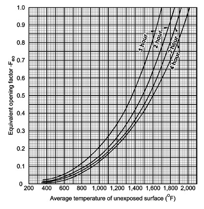
Fire Separation Distance (feet) | Degree of Opening Protection | Allowable Area a |
0 to less than 3
b, c | Unprotected, Nonsprinklered (UP, NS) | Not Permitted |
Unprotected, Sprinklered (UP, S)
i | Not Permitted | |
Protected (P) | Not Permitted
j, k | |
3 to less than 5
d, e | Unprotected, Nonsprinklered (UP, NS) | Not Permitted |
Unprotected, Sprinklered (UP, S)
i | 15% | |
Protected (P) | 15%
l | |
5 to less than 10
e, f, n | Unprotected, Nonsprinklered (UP, NS) | 10%
h |
Unprotected, Sprinklered (UP, S)
i | 25% | |
Protected (P) | 25%
l | |
10 to less than 15
e, f, g, n | Unprotected, Nonsprinklered (UP, NS) | 15%
h |
Unprotected, Sprinklered (UP, S)
i | 45% | |
Protected (P) | 45%
l | |
15 to less than 20
f, g, n | Unprotected, Nonsprinklered (UP, NS) | 25% |
Unprotected, Sprinklered (UP, S)
i | 75% | |
Protected (P) | 75%
l | |
20 to less than 25
f, g, n | Unprotected, Nonsprinklered (UP, NS) | 45% |
Unprotected, Sprinklered (UP, S)
i | No Limit | |
Protected (P) | No Limit
l | |
25 to less than 30
f, g, n | Unprotected, Nonsprinklered (UP, NS) | 70% |
Unprotected, Sprinklered (UP, S)
i | No Limit | |
Protected (P) | No Limit | |
30 or greater | Unprotected, Nonsprinklered (UP, NS) | No Limit |
Unprotected, Sprinklered (UP, S)
i | No Limit | |
Protected (P) | No Limit | |
Group | Fire-Resistance Rating (hours) |
A, B, E, H-4, I, R-1, R-2, U | 3
a
|
F-1, H-3b, H-5, M, S-1 | 3 |
H-1, H-2 | 4
b
|
F-2, S-2, R-3 | 2 |
Occupancy Group | Fire-Resistance Rating (hours) |
H-1, H-2 | 4 |
F-1, H-3, S-1 | 3 |
A, B, E, F-2, H-4, H-5, I, M, R, S-2 | 2 |
U | 1 |
Fire Test Standard | Marking | Definition of Marking |
ASTM E 119 or UL 263 | W | Meets wall assembly criteria. |
NFPA 257 or UL 9 | OH | Meets fire window assembly criteria including the hose stream test. |
NFPA 252 or UL 10B or UL 10C | D H T | Meets fire door assembly criteria. Meets fire door assembly hose stream test. Meets 450ºF temperature rise criteria for 30 minutes. |
XXX | The time in minutes of the fire resistance or fire protection rating of the glazing assembly. |
Type of Assembly | Required Wall Assembly Rating (Hours) | Minimum Fire Door and Fire Shutter Assembly Rating (Hours) | Door Vision Panel Size b | Fire-Rated Glazing Marking Door Vision Panel d | Minimum Sidelight / Transom Assembly Rating (Hours) | Fire-Rated Glazing Marking Sidelight / Transom Panel | ||
Fire protection | Fire resistance | Fire protection | Fire resistance | |||||
Type of Assembly | Required Wall Assembly Rating (Hours) | Minimum Fire Door and Fire Shutter Assembly Rating (Hours) | Door Vision Panel Size b | Fire-Rated Glazing Marking Door Vision Panel d | Minimum Sidelight / Transom Assembly Rating (Hours) | Fire-Rated Glazing Marking Sidelight / Transom Panel | ||
Fire protection | Fire resistance | Fire protection | Fire resistance | |||||
Fire walls, public corridor walls and fire barriers having a required fire-resistance rating greater than 1 hour | 4 | 3 | See Note b | D-H-W-240 | Not Permitted | 4 | Not Permitted | W-240 |
3 | 3
a | See Note b | D-H-W-180 | Not Permitted | 3 | Not Permitted | W-180 | |
2 | 1 1/2 | 100 sq. in. | ≤ 100 sq. in. = D-H-90 >100 sq. in. = D-H-W-90 | Not Permitted | 2 | Not Permitted | W-120 | |
1 1/2 | 1 1/2 | 100 sq. in. | ≤ 100 sq. in. = D-H-90 >100 sq. in. = D-H-W-90 | Not Permitted | 1 1/2 | Not Permitted | W-90 | |
Enclosures for shafts, interior exit stairways and interior exit ramps | 2 | 1 1/2 | 100 sq. in. | ≤ 100 sq. in. = D-H-90 > 100 sq. in. = D-H-T-W-90 | Not Permitted | 2 | Not Permitted | W-120 |
Horizontal exits in fire walls
e | 4 | 3 | 100 sq. in. | ≤ 100 sq. in. = D-H-180 > 100 sq. in. = D-H-W-240 | Not Permitted | 4 | Not Permitted | W-240 |
3 | 3
a | 100 sq. in. | ≤ 100 sq. in. = D-H-180 > 100 sq. in. = D-H-W-180 | Not Permitted | 3 | Not Permitted | W-180 | |
Fire barriers having a required fire-resistance rating of 1 hour: Enclosures for shafts, exit access stairways, exit access ramps, interior exit stairways and interior exit ramps; and exit passageway walls | 1 | 1 | 100 sq. in.
c | ≤ 100 sq. in. = D-H-60 > 100 sq. in. = D-H-T-W-60 | Not Permitted | 1 | Not Permitted | W-60 |
Other fire barriers; and public corridor walls | 1 | 3/4 | Maximum size tested | D-H | Fire protection | D-H | ||
3/4 | ||||||||
Fire partitions: Interior corridor walls | 1 | 3/4 | Maximum size tested | D-20 | 3/4
b | D-H-OH-45 | ||
Other fire partitions | 1 | 3/4 | Maximum size tested | D-H-45 | 3/4 | D-H-45 | ||
Exterior walls | 3 | 1 1/2 | 100 sq. in.
b | ≤ 100 sq. in. = D-H-90 > 100 sq. in = D-H-W-90 | ||||
2 | 1 1/2 | 100 sq. in.
b | ≤ 100 sq. in. = D-H-90 > 100 sq. in.= D-H-W-90 | |||||
1 | 3/4 | Maximum size tested | D-H-45 | Fire protection | D-H-45 | |||
3/4 | ||||||||
Smoke barriers | 1 | 1/3 | Maximum size tested | D-20 | Fire protection | D-H-OH-45 | ||
3/4 | ||||||||
Type of Assembly | Required Wall Assembly Rating (hours) | Minimum Fire Window Assembly Rating (hours) | Fire-Rated Glazing Marking |
Type of Assembly | Required Wall Assembly Rating (hours) | Minimum Fire Window Assembly Rating (hours) | Fire-Rated Glazing Marking |
Interior walls: | NP
a | ||
Fire walls | All | NP
a | W-XXX
b |
Fire barriers | >1 1 | NP
a | W-XXX
b W-XXX b |
Incidental use areas (Section 707.3.7), Mixed occupancy separations (Section 707.3.9) | 1 | 3/4 | OH-45 or W-60 |
Fire partitions | 1 | 3/4 | OH-45 or W-60 |
Smoke barriers | 1 | 3/4 | OH-45 or W-60 |
Exterior walls | >1 1 | 1 1/2 3/4 | OH-90 or W-XXX
b OH-45 or W-60 |
Party wall | All | NP | Not Applicable |
Type of Penetration | Minimum Damper Rating (hour) |
Less than 3-hour fire-resistance-rated assemblies | 1.5 |
3-hour or greater fire-resistance-rated assemblies | 3 |
Structural Parts to be Protected | Item Number | Insulating Material Used | Minimum Thickness of Insulating Material for the Following Fire-Resistance Periods (Inches) | |||
4 hours | 3 hours | 2 hours | 1 hour | |||
Structural Parts to be Protected | Item Number | Insulating Material Used | Minimum Thickness of Insulating Material for the Following Fire-Resistance Periods (Inches) | |||
4 hours | 3 hours | 2 hours | 1 hour | |||
1. Steel columns and all of primary trusses | 1-1.1 | Carbonate, lightweight and sand-lightweight aggregate concrete, members 6" × 6" or greater (not including sandstone, granite and siliceous gravel). a |
2 1/2 | 2 | 1 1/2 | 1 |
1-1.2 | Carbonate, lightweight and sand-lightweight aggregate concrete, members 8" × 8" or greater (not including sandstone, granite and siliceous gravel). a |
2 | 1 1/2 | 1 | 1 | |
1-1.3 | Carbonate, lightweight and sand-lightweight aggregate concrete, members 12" × 12" or greater (not including sandstone, granite and siliceous gravel). a |
1 1/2 | 1 | 1 | 1 | |
1-1.4 | Siliceous aggregate concrete and concrete excluded in Item 1-1.1, members 6" × 6" or greater. a |
3 | 2 | 1 1/2 | 1 | |
1-1.5 | Siliceous aggregate concrete and concrete excluded in Item 1-1.1, members 8" × 8" or greater. a |
2 1/2 | 2 | 1 | 1 | |
1-1.6 | Siliceous aggregate concrete and concrete excluded in Item 1-1.1, members 12" × 12" or greater. a | 2 | 1 | 1 | 1 | |
1-2.1 | Clay or shale brick with brick and mortar fill. a |
3 3/4 | — | — | 2 1/4 | |
1-3.1 | 4" hollow clay tile in two 2" layers; 1/2" mortar between tile and column; 3/8" metal mesh 0.046" wire diameter in horizontal joints; tile fill. a |
4 | — | — | — | |
1-3.2 | 2" hollow clay tile; 3/4" mortar between tile and column; 3/8" metal mesh 0.046" wire diameter in horizontal joints; limestone concrete fill; a plastered with 3/4" gypsum plaster. | 3 | — | — | — | |
1-3.3 | 2" hollow clay tile with outside wire ties 0.08" diameter at each course of tile or 3/8" metal mesh 0.046" diameter wire in horizontal joints; limestone or trap-rock concrete fill
a
extending 1" outside column on all sides | — | — | 3 | — | |
1-3.4 | 2" hollow clay tile with outside wire ties 0.08" diameter at each course of tile with or without concrete fill; 3/4" mortar between tile and column. | — | — | — | 2 | |
1-4.1 | Cement plaster over metal lath wire tied to 3/4" cold-rolled vertical channels with 0.049" (No. 18 B.W. gage) wire ties spaced 3" to 6" on center. Plaster mixed 1:2 1/2 by volume, cement to sand. | — | — | 1 1/2 b |
7/8 | |
1-5.1 | Vermiculite concrete, 1:4 mix by volume over paperbacked wire fabric lath wrapped directly around column with additional 2" × 2" 0.065"/0.065" (No. 16/16 B.W. gage) wire fabric placed 3/4" from outer concrete surface. Wire fabric tied with 0.049" (No. 18 B.W. gage) wire spaced 6" on center for inner layer and 2" on center for outer layer. | 2 | — | — | — | |
1-6.1 | Perlite or vermiculite gypsum plaster over metal lath wrapped around column and furred 1 1/4" from column flanges. Sheets lapped at ends and tied at 6" intervals with 0.049" (No. 18 B.W. gage) tie wire. Plaster pushed through to flanges. | 1 1/2 | 1 | — | — | |
1-6.2 | Perlite or vermiculite gypsum plaster over self-furring metal lath wrapped directly around column, lapped 1" and tied at 6" intervals with 0.049" (No. 18 B.W. gage) wire. | 1 3/4 | 1 3/8 | 1 | — | |
1-6.3 | Perlite or vermiculite gypsum plaster on metal lath applied to 3/4" cold-rolled channels spaced 24" apart vertically and wrapped flatwise around column. | 1 1/2 | — | — | — | |
1-6.4 | Perlite or vermiculite gypsum plaster over two layers of 1/2" plain full-length gypsum lath applied tight to column flanges. Lath wrapped with 1" hexagonal mesh of No. 20 gage wire and tied with doubled 0.035" diameter (No. 18 B.W. gage) wire ties spaced 23" on center. For three-coat work, the plaster mix for the second coat shall not exceed 100 pounds of gypsum to 2 1/2 cubic feet of aggregate for the 3-hour system. | 2 1/2 | 2 | — | — | |
1-6.5 | Perlite or vermiculite gypsum plaster over one layer of 1/2" plain full-length gypsum lath applied tight to column flanges. Lath tied with doubled 0.049" (No. 18 B.W. gage) wire ties spaced 23" on center and scratch coat wrapped with 1" hexagonal mesh 0.035" (No. 20 B.W. gage) wire fabric. For three-coat work, the plaster mix for the second coat shall not exceed 100 pounds of gypsum to 2 1/2 cubic feet of aggregate. | — | 2 | — | — | |
1-7.1 | Multiple layers of 1/2" gypsum wallboard c adhesively d secured to column flanges and successive layers. Wallboard applied without horizontal joints. Corner edges of each layer staggered. Wallboard layer below outer layer secured to column with doubled 0.049" (No. 18 B.W. gage) steel wire ties spaced 15" on center. Exposed corners taped and treated. | — | — | 2 | 1 | |
1-7.2 | Three layers of 5/8" Type X gypsum wallboard. c First and second layer held in place by 1/8" diameter by 1 3/8" long ring shank nails with 5/16" diameter heads spaced 24" on center at corners. Middle layer also secured with metal straps at mid-height and 18" from each end, and by metal corner bead at each corner held by the metal straps. Third layer attached to corner bead with 1" long gypsum wallboard screws spaced 12" on center. | — | — | 1 7/8 | — | |
1-7.3 | Three layers of 5/8" Type X gypsum wallboard, c each layer screw attached to 1 5/8" steel studs 0.018" thick (No. 25 carbon sheet steel gage) at each corner of column. Middle layer also secured with 0.049" (No. 18 B.W. gage) double-strand steel wire ties, 24" on center. Screws are No. 6 by 1" spaced 24" on center for inner layer, No. 6 by 1" spaced 12" on center for middle layer and No. 8 by 2 1/4" spaced 12" on center for outer layer. | — | 1 7/8 | — | — | |
1-8.1 | Wood-fibered gypsum plaster mixed 1:1 by weight gypsum-to-sand aggregate applied over metal lath. Lath lapped 1" and tied 6" on center at all end, edges and spacers with 0.049" (No. 18 B.W. gage) steel tie wires. Lath applied over 1/2" spacers made of 3/4" furring channel with 2" legs bent around each corner. Spacers located 1" from top and bottom of member and a maximum of 40" on center and wire tied with a single strand of 0.049" (No. 18 B.W. gage) steel tie wires. Corner bead tied to the lath at 6" on center along each corner to provide plaster thickness. | — | — | 1 5/8 | — | |
1-9.1 | Minimum W8x35 wide flange steel column (w/d ≥ 0.75) with each web cavity filled even with the flange tip with normal weight carbonate or siliceous aggregate concrete (3,000 psi minimum compressive strength with 145 pcf ± 3 pcf unit weight). Reinforce the concrete in each web cavity with a minimum No. 4 deformed reinforcing bar installed vertically and centered in the cavity, and secured to the column web with a minimum No. 2 horizontal deformed reinforcing bar welded to the web every 18" on center vertically. As an alternative to the No. 4 rebar, 3/4" diameter by 3" long headed studs, spaced at 12" on center vertically, shall be welded on each side of the web midway between the column flanges. | — | — | — | See Note n | |
2. Webs or flanges of steel beams and girders | 2-1.1 | Carbonate, lightweight and sand-lightweight aggregate concrete (not including sandstone, granite and siliceous gravel) with 3" or finer metal mesh placed 1" from the finished surface anchored to the top flange and providing not less than 0.025 square inch of steel area per foot in each direction. | 2 | 1 1/2 | 1 | 1 |
2-1.2 | Siliceous aggregate concrete and concrete excluded in Item 2-1.1 with 3" or finer metal mesh placed 1" from the finished surface anchored to the top flange and providing not less than 0.025 square inch of steel area per foot in each direction. | 2 1/2 | 2 | 1 1/2 | 1 | |
2-2.1 | Cement plaster on metal lath attached to 3/4" cold-rolled channels with 0.04" (No. 18 B.W. gage) wire ties spaced 3" to 6" on center. Plaster mixed 1:2 1/2 by volume, cement to sand. | — | — | 2 1/2 b |
7/8 | |
2-3.1 | Vermiculite gypsum plaster on a metal lath cage, wire tied to 0.165" diameter (No. 8 B.W. gage) steel wire hangers wrapped around beam and spaced 16" on center. Metal lath ties spaced approximately 5" on center at cage sides and bottom. | — | 7/8 | — | — | |
2-4.1 | Two layers of 5/8" Type X gypsum wallboard c are attached to U-shaped brackets spaced 24" on center. 0.018" thick (No. 25 carbon sheet steel gage) 1 5/8" deep by 1" galvanized steel runner channels are first installed parallel to and on each side of the top beam flange to provide a 1/2" clearance to the flange. The channel runners are attached to steel deck or concrete floor construction with approved fasteners spaced 12" on center. U-shaped brackets are formed from members identical to the channel runners. At the bent portion of the U-shaped bracket, the flanges of the channel are cut out so that 1 5/8" deep corner channels can be inserted without attachment parallel to each side of the lower flange. As an alternative, 0.021" thick (No. 24 carbon sheet steel gage) 1" × 2" runner and corner angles shall be used in lieu of channels, and the web cutouts in the U-shaped brackets shall not be required. Each angle is attached to the bracket with 1/2"-long No. 8 self-drilling screws. The vertical legs of the U-shaped bracket are attached to the runners with one 1/2" long No. 8 self-drilling screw. The completed steel framing provides a 2 1/2" and 1 1/2" space between the inner layer of wallboard and the sides and bottom of the steel beam, respectively. The inner layer of wallboard is attached to the top runners and bottom corner channels or corner angles with 1 1/4"-long No. 6 self-drilling screws spaced 16" on center. The outer layer of wallboard is applied with 1 3/4"-long No. 6 self-drilling screws spaced 8" on center. The bottom corners are reinforced with metal corner beads. | — | — | 1 1/4 | — | |
2-4.2 | Three layers of 5/8" Type X gypsum wallboard c attached to a steel suspension system as described immediately above utilizing the 0.018" thick (No. 25 carbon sheet steel gage) 1" × 2" lower corner angles. The framing is located so that a 2 1/8" and 2" space is provided between the inner layer of wallboard and the sides and bottom of the beam, respectively. The first two layers of wallboard are attached as described immediately above. A layer of 0.035" thick (No. 20 B.W. gage) 1" hexagonal galvanized wire mesh is applied under the soffit of the middle layer and up the sides approximately 2". The mesh is held in position with the No. 6 1 5/8"-long screws installed in the vertical leg of the bottom corner angles. The outer layer of wallboard is attached with No. 6 2 1/4"-long screws spaced 8" on center. One screw is also installed at the mid-depth of the bracket in each layer. Bottom corners are finished as described above. | — | 1 7/8 | — | — | |
3. Bonded pretensioned reinforcement in prestressed concrete e |
3-1.1 | Carbonate, lightweight, sand-lightweight and siliceous f aggregate concrete | ||||
Beams or girders | 4 g | 3 g |
1 1/2 | 1 1/2 | ||
Solid slabs h | 2 | 1 1/2 | 1 | |||
4. Bonded or unbounded post-tensioned tendons in prestressed concrete e, i |
4-1.1 | Carbonate, lightweight, sand-lightweight and siliceous f aggregate concrete Unrestrained members: | ||||
Solid slabs h |
— | 2 | 1 1/2 | — | ||
Beams and girders j 8" wide | 4 1/2 | 2 1/2 | 1 3/4 | |||
greater than 12" wide | 3 | 2 1/2 | 2 | 1 1/2 | ||
4-1.2 | Carbonate, lightweight, sand-lightweight and siliceous aggregate Restrained members: k | |||||
Solid slabs h |
1 1/4 | 1 | 3/4 | — | ||
Beams and girders j 8" wide | 2 1/2 | 2 | 1 3/4 | — | ||
greater than 12" wide | 2 | 1 3/4 | 1 1/2 | — | ||
5. Reinforcing steel in reinforced concrete columns, beams girders and trusses | 5-1.1 | Carbonate, lightweight and sand-lightweight aggregate concrete, members 12" or larger, square or round. (Size limit does not apply to beams and girders monolithic with floors) | 1 1/2 | 1 1/2 | 1 1/2 | 1 1/2 |
Siliceous aggregate concrete, members 12" or larger, square or round. (Size limit does not apply to beams and girders monolithic with floors.) | 2 | 1 1/2 | 1 1/2 | 1 1/2 | ||
6. Reinforcing steel in reinforced concrete joists l | 6-6.1 | Carbonate, lightweight and sand-lightweight aggregate concrete. | 1 1/4 | 1 1/4 | 1 | 3/4 |
6-6.2 | Siliceous aggregate concrete. | 1 3/4 | 1 1/2 | 1 | 3/4 | |
7. Reinforcing and tie rods in floor and roof slabs l |
7-1.1 | Carbonate, lightweight and sand-lightweight aggregate concrete. | 1 | 1 | 3/4 | 3/4 |
7-1.2 | Siliceous aggregate concrete. | 1 1/4 | 1 | 1 | 3/4 | |
Material | Item Number | Construction | Minimum Finished Thickness Face-to-Face
b
(Inches) | |||
4 hours | 3 hours | 2 hours | 1 hour | |||
Material | Item Number | Construction | Minimum Finished Thickness Face-to-Face
b
(Inches) | |||
4 hours | 3 hours | 2 hours | 1 hour | |||
1. Brick of clay or shale | 1-1.1 | Solid brick of clay or shale. c |
6 | 4.9 | 3.8 | 2.7 |
1-1.2 | Hollow brick, not filled. | 5.0 | 4.3 | 3.4 | 2.3 | |
1-1.3 | Hollow brick unit wall, grout or filled with perlite vermiculite or expanded shale aggregate. | 6.6 | 5.5 | 4.4 | 3.0 | |
1-2.1 | 4" nominal thick units not less than 75 percent solid backed with a hat-shaped metal furring channel 3/4" thick formed from 0.021" sheet metal attached to the brick wall on 24" centers with approved fasteners, and 1/2" Type X gypsum wallboard attached to the metal furring strips with 1"-long Type S screws spaced 8" on center. | — | — | 5 d |
— | |
2. Combination of clay brick and load-bearing hollow clay tile | 2-1.1 | 4" solid brick and 4" tile (not less than 40 percent solid). | — | 8 | — | — |
2-1.2 | 4" solid brick and 8" tile (not less than 40 percent solid). | 12 | — | — | — | |
3. Concrete masonry units | 3-1.1 f, g |
Expanded slag or pumice. | 4.7 | 4.0 | 3.2 | 2.1 |
3-1.2 f, g |
Expanded clay, shale or slate. | 5.1 | 4.4 | 3.6 | 2.1 | |
3-1.3 f |
Limestone, cinders or air-cooled slag. | 5.9 | 5.0 | 4.0 | 2.7 | |
3-1.4 f, g |
Calcareous or siliceous gravel. | 6.2 | 5.3 | 4.2 | 2.8 | |
4. Solid concrete h, i |
4.1.1 | Siliceous aggregate concrete. | 7.0 | 6.2 | 5.0 | 3.5 |
Carbonate aggregate concrete. | 6.6 | 5.7 | 4.6 | 3.2 | ||
Sand-lightweight concrete. | 5.4 | 4.6 | 3.8 | 2.7 | ||
Lightweight concrete. | 5.1 | 4.4 | 3.6 | 2.5 | ||
5. Glazed or unglazed facing tile, nonload-bearing | 5-1.1 | One 2" unit cored 15 percent maximum and one 4" unit cored 25 percent maximum with 3/4" mortar-filled collar joint. Unit positions reversed in alternate courses. | — | 6 3/8 | — | — |
5-1.2 | One 2" unit cored 15 percent maximum and one 4" unit cored 40 percent maximum with 3/4" mortar-filled collar joint. Unit positions side with 3/4" gypsum plaster. Two wythes tied together every fourth course with No. 22 gage corrugated metal ties. | — | 6 3/4 | — | — | |
5-1.3 | One unit with three cells in wall thickness, cored 29 percent maximum. | — | — | 6 | — | |
5-1.4 | One 2" unit cored 22 percent maximum and one 4" unit cored 41 percent maximum with 1/4" mortar-filled collar joint. Two wythes tied together every third course with 0.030" (No. 22 galvanized sheet steel gage) corrugated metal ties. | — | — | 6 | — | |
5-1.5 | One 4" unit cored 25 percent maximum with 3/4" gypsum plaster on one side. | — | — | 4 3/4 | — | |
5-1.6 | One 4" unit with two cells in wall thickness, cored 22 percent maximum. | — | — | — | 4 | |
5-1.7 | One 4" unit cored 30 percent maximum with 3/4" vermiculite gypsum plaster on one side. | — | — | 4 1/2 | — | |
5-1.8 | One 4" unit cored 39 percent maximum with 3/4" gypsum plaster on one side. | — | — | — | 4 1/2 | |
6. Solid gypsum plaster | 6-6.1 | 3/4" by 0.055" (No. 16 carbon sheet steel gage) vertical cold-rolled channels, 16" on center with 2.6-pound flat metal lath applied to one face and tied with 0.049" (No. 18 B.W. gage) wire at 6" spacing. Gypsum plaster each side mixed 1:2 by weight, gypsum to sand aggregate. | — | — | — | 2 d |
6-6.2 | 3/4" by 0.055" (No. 16 carbon sheet steel gage) cold-rolled channels 16" on center with metal lath applied to one face and tied with 0.049" (No. 18 B.W. gage) wire at 6" spacing. Perlite or vermiculite gypsum plaster each side. For three-coat work, the plaster mix for the second coat shall not exceed 100 pounds of gypsum to 2 1/2 cubic feet of aggregate for the 1-hour system. | — | — | 2 1/2 d | 2 d | |
6-1.3 | 3/4" by 0.055" (No. 16 carbon sheet steel gage) vertical cold-rolled channels, 16" on center with 3/8" gypsum lath applied to one face and attached with sheet metal clips. Gypsum plaster each side mixed 1:2 by weight, gypsum to sand aggregate. | — | — | — | 2 d | |
6-2.1 | Studless with 1/2" full-length plain gypsum lath and gypsum plaster each side. Plaster mixed 1:1 for scratch coat and 1:2 for brown coat, by weight, gypsum to sand aggregate. | — | — | — | 2 d | |
6-2.2 | Studless with 1/2" full-length plain gypsum lath and perlite or vermiculite gypsum plaster each side. | — | — | 2 1/2 d | 2 d | |
6-2.3 | Studless partition with 3/8" rib metal lath installed vertically adjacent edges tied 6" on center with No. 18 gage wire ties, gypsum plaster each side mixed 1:2 by weight, gypsum to sand aggregate. | — | — | — | 2 d | |
7. Solid perlite and portland cement | 7-1.1 | Perlite mixed in the ratio of 3 cubic feet to 100 pounds of portland cement and machine applied to stud side of 1 1/2" mesh by 0.058-inch (No. 17 B.W. gage) paper-backed woven wire fabric lath wire-tied to 4"-deep steel trussed wire j studs 16" on center. Wire ties of 0.049" (No. 18 B.W. gage) galvanized steel wire 6" on center vertically. | — | — | 3 1/8 d |
— |
8. Solid neat wood fibered gypsum plaster | 8-1.1 | 3/4" by 0.055-inch (No. 16 carbon sheet steel gage) cold-rolled channels, 12" on center with 2.5-pound flat metal lath applied to one face and tied with 0.049" (No. 18 B.W. gage) wire at 6" spacing. Neat gypsum plaster applied each side. | — | — | 2 d |
— |
9. Solid wallboard partition | 9-1.1 | One full-length layer 1/2" Type X gypsum wallboard e laminated to each side of 1" full-length V-edge gypsum coreboard with approved laminating compound. Vertical joints of face layer and coreboard staggered not less than 3". | —
|
—
| 2 d |
—
|
10. Hollow (studless) gypsum wallboard partition | 10-1.1 | One full-length layer of 5/8" Type X gypsum wallboard e attached to both sides of wood or metal top and bottom runners laminated to each side of 1" × 6" full-length gypsum coreboard ribs spaced 24" on center with approved laminating compound. Ribs centered at vertical joints of face plies and joints staggered 24" in opposing faces. Ribs may be recessed 6" from the top and bottom. | — | — | — | 2 1/4 d |
10-1.2 | 1" regular gypsum V-edge full-length backing board attached to both sides of wood or metal top and bottom runners with nails or 1 5/8" drywall screws at 24" on center. Minimum width of rumors 1 5/8". Face layer of 1/2" regular full-length gypsum wallboard laminated to outer faces of backing board with approved laminating compound. | — | — | 4 5/8 d |
— | |
11. Noncombustible studs – interior partition with plaster each side | 11-1.1 | 3 1/4" × 0.044" (No. 18 carbon sheet steel gage) steel studs spaced 24" on center. 5/8" gypsum plaster on metal lath each side mixed 1:2 by weight, gypsum to sand aggregate. | — | — | — | 4 3/4 d |
11-1.2 | 3 3/8" × 0.055" (No. 16 carbon sheet steel gage) approved nailable k studs spaced 24" on center. 5/8" neat gypsum wood-fibered plaster each side over 3/8" rib metal lath nailed to studs with 6d common nails, 8" on center. Nails driven 1 1/4" and bent over. | — | — | 5 5/8 | — | |
11-1.3 | 4" × 0.044" (No. 18 carbon sheet steel gage) channel-shaped steel studs at 16" on center. On each side approved resilient clips pressed onto stud flange at 16" vertical spacing, 1/4" pencil rods snapped into or wire tied onto outer loop of clips, metal lath wire-tied to pencil rods at 6" intervals, 1" perlite gypsum plaster, each side. | — | 7 5/8 d |
— | — | |
11-1.4 | 2 1/2" × 0.044" (No. 18 carbon sheet steel gage) steel studs spaced 16" on center. Wood fibered gypsum plaster mixed 1:1 by weight gypsum to sand aggregate applied on 3/4-pound metal lath wire tied to studs, each side. 3/4" plaster applied over each face, including finish coat. | — | — | 4 1/4 d |
— | |
12. Wood studs interior partition with plaster each side | 12-1.1 l, m |
2" × 4" wood studs 16" on center with 5/8" gypsum plaster on metal lath. Lath attached by 4d common nails bent over or No. 14 gage by 1 1/4" by 3/4" crown width staples spaced 6" on center. Plaster mixed 1:1 1/2 for scratch coat and 1:3 for brown coat, by weight, gypsum to sand aggregate. | — | — | — | 5 1/8 |
12-1.2 l |
2" × 4" wood studs 16" on center with metal lath and 7/8" neat wood-fibered gypsum plaster each side. Lath attached by 6d common nails, 7" on center. Nails driven 1 1/4" and bent over. | — | — | 5 1/2 d |
— | |
12-1.3 l |
2" × 4" wood studs 16" on center with 1/2" perforated or plain gypsum lath and 1/2" gypsum plaster each side. Lath nailed with 1 1/8" by No. 13 gage by 19/64" head plasterboard blued nails, 4" on center. Plaster mixed 1:2 by weight, gypsum to sand aggregate. | — | — | — | 5 1/4 | |
12-1.4 l |
2" × 4" wood studs 16" on center with 3/8" Type X gypsum lath and 1/2" gypsum plaster each side. Lath nailed with 1 1/8" by No. 13 gage by 19/64" head plasterboard blued nails, 5" on center. Plaster mixed 1:2 by weight, gypsum to sand aggregate. | — | — | — | 5 1/4 | |
13. Noncombustible studs – interior partition with gypsum wallboard each side | 13-1.1 | 0.0 18" (No. 25 carbon sheet steel gage) channel-shaped studs 24" on center with one full-length layer of 5/8" Type X gypsum wallboard e applied vertically attached with 1" long No. 6 drywall screws to each stud. Screws are 8" on center around the perimeter and 12" on center on the intermediate stud. Where applied horizontally, the Type X gypsum wallboard shall be attached to 3 5/8" studs and the horizontal joints shall be staggered with those on the opposite side. Screws for the horizontal application shall be 8" on center at vertical edges and 12" on center at intermediate studs. | — | — | — | 2 7/8 d |
13-1.2 | 0.0 18" (No. 25 carbon sheet steel gage) channel-shaped studs 25" on center with two full-length layers of 1/2" Type X gypsum wallboard e applied vertically each side. First layer attached with 1"-long, No. 6 drywall screws, 8" on center around the perimeter and 12" on center on the intermediate stud. Second layer applied with vertical joints offset one stud space from first layer using 1 5/8" long, No. 6 drywall screws spaced 9" on center along vertical joints, 12" on center at intermediate studs and 24" on center along top and bottom runners. | — | — | 3 5/8 d |
— | |
13-1.3 | 0.055" (No. 16 carbon sheet steel gage) approved nailable metal studs e 24" on center with full-length 5/8" Type X gypsum wallboard e applied vertically and nailed 7" on center with 6d cement-coated common nails. Approved metal fastener grips used with nails at vertical butt joints along studs. | — | — | — | 4 7/8 | |
14. Wood studs – interior partition with gypsum wallboard each side | 14-1.1 h, m | 2" × 4" wood studs 16" on center with two layers of 3/8" regular gypsum wallboard e each side, 4d cooler n or wallboard n nails at 8" on center first layer, 5d cooler n or wallboard n nails at 8" on center second layer with laminating compound between layers, joints staggered. First layer applied full length vertically, second layer applied horizontally or vertically. | — | — | — | 5 |
14-1.2 l, m | 2" × 4" wood studs 16" on center with two layers 1/2" regular gypsum wallboard e applied vertically or horizontally each side k, joints staggered. Nail base layer with 5d cooler n or wallboard n nails at 8" on center face layer with 8d cooler n or wallboard n nails at 8" on center. | — | — | — | 5 1/2 | |
14-1.3 l, m | 2" × 4" wood studs 24" on center with 5/8" Type X gypsum wallboard e applied vertically or horizontally nailed with 6d cooler n or wallboard n nails at 7" on center with end joints on nailing members. Stagger joints each side. | — | — | — | 4 3/4 | |
14-1.4 l | 2" × 4" fire-retardant-treated wood studs spaced 24" on center with one layer of 5/8" Type X gypsum wallboard e applied with face paper grain (long dimension) parallel to studs. Wallboard attached with 6d cooler n or wallboard n nails at 7" on center. | — | — | — | 4 3/4 d | |
14-1.5 l, m | 2" × 4" wood studs 16" on center with two layers 5/8" Type X gypsum wallboard e each side. Base layers applied vertically and nailed with 6d cooler n or wallboard n nails at 9" on center. Face layer applied vertically or horizontally and nailed with 8d cooler n or wallboard n nails at 7" on center. For nail-adhesive application, base layers are nailed 6" on center. Face layers applied with coating of approved wallboard adhesive and nailed 12" on center. | — | — | 6 | — | |
14-1.6 l | 2" × 3" fire-retardant-treated wood studs spaced 24" on center with one layer of 5/8" Type X gypsum wallboard e applied with face paper grain (long dimension) at right angles to studs. Wallboard attached with 6d cement-coated box nails spaced 7" on center. | — | — | — | 3 5/8 d | |
15. Exterior or interior walls | 15-1.1 l, m |
Exterior surface with 3/4" drop siding over 1/2" gypsum sheathing on 2" × 4" wood studs at 16" on center, interior surface treatment as required for 1-hour-rated exterior or interior 2" × 4" wood stud partitions. Gypsum sheathing nailed with 1 3/4" by No. 11 gage by 7/16" head galvanized nails at 8" on center. Siding nailed with 7d galvanized smooth box nails. | — | — | — | Varies |
15-1.2 l, m |
2" × 4" wood studs 16" on center with metal lath and 3/4" cement plaster on each side. Lath attached with 6d common nails 7" on center driven to 1" minimum penetration and bent over. Plaster mix 1:4 for scratch coat and 1:5 for brown coat, by volume, cement to sand. | — | — | — | 5 3/8 | |
15-1.3 l, m |
2" × 4" wood studs 16" on center with 7/8" cement plaster (measured from the face of studs) on the exterior surface with interior surface treatment as required for interior wood stud partitions in this table. Plaster mix 1:4 for scratch coat and 1:5 for brown coat, by volume, cement to sand. | — | — | Varies | ||
15-1.4 | 3 5/8" No. 16 gage noncombustible studs 16" on center with 7/8" cement plaster (measured from the face of the studs) on the exterior surface with interior surface treatment as required for interior, nonbearing, noncombustible stud partitions in this table. Plaster mix 1:4 for scratch coat and 1:5 for brown coat, by volume, cement to sand. | — | — | — | Varies d | |
15-1.5 m | 2 1/4" × 3 3/4" clay face brick with cored holes over 1/2" gypsum sheathing on exterior surface of 2" × 4" wood studs at 16" on center and two layers 5/8" Type X gypsum wallboard e on interior surface. Sheathing placed horizontally or vertically with vertical joints over studs nailed 6" on center with 1 3/4" × No. 11 gage by 7/16" head galvanized nails. Inner layer of wallboard placed horizontally or vertically and nailed 8" on center with 6d cooler e or wallboard e nails. Outer layer of wallboard placed horizontally or vertically and nailed 8" on center with 8d cooler n or wallboard n nails. Joints staggered with vertical joints over studs. Outer layer joints taped and finished with compound. Nail heads covered with joint compound. 0.035 inch (No. 20 galvanized sheet gage) corrugated galvanized steel wall ties 3/4" by 6 5/8" attached to each stud with two 8d cooler n or wallboard n nails every sixth course of bricks. | — | — | 10 | — | |
15-1.6 l, m |
2" × 6" fire-retardant-treated wood studs 16" on center. Interior face has two layers of 5/8" Type X gypsum with the base layer placed vertically and attached with 6d box nails 12" on center. The face layer is placed horizontally and attached with 8d box nails 8" on center at joints and 12" on center elsewhere. The exterior face has a base layer of 5/8" Type X gypsum sheathing placed vertically with 6d box nails 8" on center at joints and 12" on center elsewhere. An approved building paper is next applied, followed by self-furred exterior lath attached with 2 1/2", No. 12 gage galvanized roofing nails with a 3/8" diameter head and spaced 6" on center along each stud. Cement plaster consisting of a 1/2" brown coat is then applied. The scratch coat is mixed in the proportion of 1:3 by weight, cement to sand with 10 pounds of hydrated lime and 3 pounds of approved additives or admixtures per sack of cement. The brown coat is mixed in the proportion of 1:4 by weight, cement to sand with the same amounts of hydrated lime and approved additives or admixtures used in the scratch coat. | — | — | 8 1/4 | — | |
15-1.7 l, m |
2" × 6" wood studs 16" on center. The exterior face has a layer of 5/8" Type X gypsum sheathing placed vertically with 6d box nails 8" on center at joints and 12" on center elsewhere. An approved building paper is next applied, followed by 1" by No. 18 gage self-furred exterior lath attached with 8d by 2 1/2" long galvanized roofing nails spaced 6" on center along each stud. Cement plaster consisting of a 1/2" scratch coat, a bonding agent and a 1/2" brown coat and a finish coat is then applied. The scratch coat is mixed in the proportion of 1:3 by weight, cement to sand with 10 pounds of hydrated lime and 3 pounds of approved additives or admixtures per sack of cement. The brown coat is mixed in the proportion of 1:4 by weight, cement to sand with the same amounts of hydrated lime and approved additives or admixtures used in the scratch coat. The interior is covered with 3/8" gypsum lath with 1" hexagonal mesh of 0.035 inch (No. 20 B.W. gage) woven wire lath furred out 5/16" and 1" perlite or vermiculite gypsum plaster. Lath nailed with 1 1/8" by No. 13 gage by 19/64" head plasterboard glued nails spaced 5" on center. Mesh attached by 1 3/4" by No. 12 gage by 3/8" head nails with 3/8" furrings, spaced 8" on center. The plaster mix shall not exceed 100 pounds of gypsum to 2 1/2 cubic feet of aggregate. | — | — | 8 3/8 | — | |
15-1.8 l, m |
2" × 6" wood studs 16" on center. The exterior face has a layer of 5/8" Type X gypsum sheathing placed vertically with 6d box nails 8" on center at joints and 12" on center elsewhere. An approved building paper is next applied, followed by 1 1/2" by No. 17 gage self-furred exterior lath attached with 8d by 2 1/2" long galvanized roofing nails spaced 6" on center along each stud. Cement plaster consisting of a 1/2" scratch coat, and a 1/2" brown coat is then applied. The plaster may be placed by machine. The scratch coat is mixed in the proportion of 1:4 by weight, plastic cement to sand. The brown coat is mixed in the proportion of 1:5 by weight, plastic cement to sand. The interior is covered with 3/8" gypsum lath with 1" hexagonal mesh of No. 20 gage woven wire lath furred out 5/16" and 1" perlite or vermiculite gypsum plaster. Lath nailed with 1 1/8" by No. 13 gage by 19/64" head plasterboard glued nails spaced 5" on center. Mesh attached by 1 3/4" by No. 12 gage by 3/4 head nails with 3/8" furrings, spaced 8" on center. The plaster mix shall not exceed 100 pounds of gypsum to 2 1/2 cubic feet of aggregate. | — | — | 8 3/8 | — | |
15-1.9 | 4" No. 18 gage, nonload-bearing metal studs, 16" on center, with 1" Portland cement lime plaster (measured from the back side of the 3/4-pound expanded metal lath) on the exterior surface. Interior surface to be covered with 1" of gypsum plaster on 3/4-pound expanded metal lath proportioned by weight – 1:2 for scratch coat, 1:3 for brown, gypsum to sand. Lath on one side of the partition fastened to 1/4" diameter pencil rods supported by No. 20 gage metal clips, located 16" on center vertically, on each stud. 3" thick mineral fiber insulating batts friction fitted between the studs. | — | — | 6 1/2 d |
— | |
15-1.10 | Steel studs 0.060" thick, 4" deep or 6" at 16" or 24" centers, with 1/2" Glass Fiber Reinforced Concrete (GFRC) on the exterior surface. GFRC is attached with flex anchors at 24" on center, with 5" leg welded to studs with two 1/2"-long flare-bevel welds, and 4" foot attached to the GFRC skin with 5/8" thick GFRC bonding pads that extend 2 1/2" beyond the flex anchor foot on both sides. Interior surface to have two layers of 1/2" Type X gypsum wallboard. e The first layer of wallboard to be attached with 1"-long Type S buglehead screws spaced 24" on center and the second layer is attached with 1 5/8"-long Type S screws spaced at 12" on center. Cavity is to be filled with 5" of 4 pcf (nominal) mineral fiber batts. GFRC has 1 1/2" returns packed with mineral fiber and caulked on the exterior. | — | — | 6 1/2 | — | |
15-1.11 | Steel studs 0.060" thick, 4" deep or 6" at 16" or 24" centers, respectively, with 1/2" Glass Fiber Reinforced Concrete (GFRC) on the exterior surface. GFRC is attached with flex anchors at 24" on center, with 5" leg welded to studs with two 1/2"-long flare-bevel welds, and 4" foot attached to the GFRC skin with 5/8"-thick GFRC bonding pads that extend 2 1/2" beyond the flex anchor foot on both sides. Interior surface to have one layer of 5/8" Type X gypsum wallboard e, attached with 1 1/4"-long Type S buglehead screws spaced 12" on center. Cavity is to be filled with 5" of 4 pcf (nominal) mineral fiber batts. GFRC has 1 1/2" returns packed with mineral fiber and caulked on the exterior. | — | — | — | 6 1/8 | |
15-1.12 q |
2" × 6" wood studs at 16" with double top plates, single bottom plate; interior and exterior sides covered with 5/8" Type X gypsum wallboard, 4" wide, applied horizontally or vertically with vertical joints over studs, and fastened with 2 1/4" Type S drywall screws, spaced 12" on center. Cavity to be filled with 5 1/2" mineral wool insulation. | — | — | — | 6 3/4 | |
15-1.13 q |
2" × 6" wood studs at 16" with double top plates, single bottom plate; interior and exterior sides covered with 5/8" Type X gypsum wallboard, 4" wide, applied vertically with all joints over framing or blocking, and fastened with 2 1/4" Type S drywall screws, spaced 12" on center. R-19 mineral fiber insulation installed in stud cavity. | — | — | — | 6 3/4 | |
15-1.14 q |
2" x 6" wood studs at 16" with double top plates, single bottom plate; interior and exterior sides covered with 5/8" Type X gypsum wallboard, 4' wide, applied horizontally or vertically with vertical joints over studs, and fastened with 2 1/4" Type S drywall screws, spaced 7" on center. | — | — | — | 6 3/4 | |
15-1.15 q |
2" × 4" wood studs at 16" with double top plates, single bottom plate; interior and exterior sides covered with 5/8" Type X gypsum wallboard and sheathing, respectively, 4" wide, applied horizontally or vertically with vertical joints over studs, and fastened with 2 1/4" Type S drywall screws, spaced 12" on center. Cavity to be filled with 3 1/2" mineral wool insulation. | — | — | — | 4 3/4 | |
15-1.16 q |
2" × 6" wood studs at 24" centers with double top plates, single bottom plate; interior and exterior side covered with two layers of 5/8" Type X gypsum wallboard, 4" wide, applied horizontally with vertical joints over studs. Base layer fastened with 2 1/4" Type S drywall screws, spaced 24" on center, and face layer fastened with Type S drywall screws, spaced 8" on center, wallboard joints covered with paper tape and joint compound, fastener heads covered with joint compound. Cavity to be filled with 5 1/2" mineral wool insulation. | — | — | 7 3/4 | — | |
15-2.1 d |
3 5/8" No. 16 gage steel studs at 24" on center or 2" x 4" wood studs at 24" on center. Metal lath attached to the exterior side of studs with minimum 1" long No. 6 drywall screws at 6" on center and covered with minimum 3/4" thick portland cement plaster. Thin veneer brick units of clay or shale complying with ASTM C 1088, Grade TBS or better, installed in running bond in accordance with Section 1405.10. Combined total thickness of the portland cement plaster, mortar and thin veneer brick units shall be not less than 1 3/4". Interior side covered with one layer of 5/8" thick Type X gypsum wallboard attached to studs with 1" long No. 6 drywall screws at 12" on center. | — | — | — | 6 | |
15-2.2 d |
3 5/8" No. 16 gage steel studs at 24" on center or 2" x 4" wood studs at 24" on center. Metal lath attached to the exterior side of studs with minimum 1" long No. 6 drywall screws at 6" on center and covered with minimum 3/4" thick portland cement plaster. Thin veneer brick units of clay or shale complying with ASTM C 1088, Grade TBS or better, installed in running bond in accordance with Section 1405.10. Combined total thickness of the portland cement plaster, mortar and thin veneer brick units shall be not less than 2". Interior side covered with two layers of 5/8" thick Type X gypsum wallboard. Bottom layer attached to studs with 1" long No. 6 drywall screws at 24" on center. Top layer attached to studs with 1 5/8" long No. 6 drywall screws at 12" on center. | — | — | 6 7/8 | — | |
15-2.3 d |
3 5/8" No. 16 gage steel studs at 16" on center or 2" x 4" wood studs at 16" on center. Where metal lath is used, attach to the exterior side of studs with minimum 1" long No. 6 drywall screws at 6" on center. Brick units of clay or shale not less than 2 5/8" thick complying with ASTM C 216 installed in accordance with Section 1405.6 with a minimum 1" airspace. Interior side covered with one layer of 5/8" thick Type X gypsum wallboard attached to studs with 1" long No. 6 drywall screws at 12" on center. | — | — | — | 7 7/8 | |
15-2.4 d |
3 5/8" No. 16 gage steel studs at 16" on center or 2" x 4" wood studs at 16" on center. Where metal lath is used, attach to the exterior side of studs with minimum 1" long No. 6 drywall screws at 6" on center. Brick units of clay or shale not less than 2 5/8" thick complying with ASTM C 216 installed in accordance with Section 1405.6 with a minimum 1" airspace. Interior side covered with two layers of 5/8" thick Type X gypsum wallboard. Bottom layer attached to studs with 1" long No. 6 drywall screws at 24" on center. Top layer attached to studs with 1 5/8" long No. 6 drywall screws at 12" on center. | — | — | 8 1/2 | — | |
16. Exterior walls rated for fire resistance from the inside only in accordance with Section 705.5. | 16-1.1 q |
2" × 4" wood studs at 16" centers with double top plates, single bottom plate; interior side covered with 5/8" Type X gypsum wallboard, 4" wide, applied horizontally unblocked, and fastened with 2 1/4" Type S drywall screws, spaced 12" on center, wallboard joints covered with paper tape and joint compound, fastener heads covered with joint compound. Exterior covered with 3/8" wood structural panels, applied vertically, horizontal joints blocked and fastened with 6d common nails (bright) – 12" on center in the field, and 6" on center panel edges. Cavity to be filled with 3 1/2" mineral wool insulation. Rating established for exposure from interior side only. | — | — | — | 4 1/2 |
16-1.2 q |
2" × 6" wood studs at 16" centers with double top plates, single bottom plate; interior side covered with 5/8" Type X gypsum wallboard, 4" wide, applied horizontally or vertically with vertical joints over studs and fastened with 2 1/4" Type S drywall screws, spaced 12" on center, wallboard joints covered with paper tape and joint compound, fastener heads covered with joint compound, exterior side covered with 7/16" wood structural panels fastened with 6d common nails (bright) spaced 12" on center in the field and 6" on center along the panel edges. Cavity to be filled with 5 1/2" mineral wool insulation. Rating established from the gypsum-covered side only. | — | — | — | 6 9/16 | |
16-1.3 q | 2" x 6" wood studs at 16" centers with double top plates, single bottom plates; interior side covered with 5/8" Type X gypsum wallboard, 4' wide, applied vertically with all joints over framing or blocking and fastened with 2 1/4" Type S drywall screws spaced 7" on center. Joints to be covered with tape and joint compound. Exterior covered with 3/8" wood structural panels, applied vertically with edges over framing or blocking and fastened with 6d common nails (bright) at 12" on center in the field and 6" on center on panel edges. R-19 mineral fiber insulation installed in stud cavity. Rating established from the gypsum-covered side only. | — | — | — | 6 1/2 | |
Floor or Roof Construction | Item Number | Ceiling Construction | Thickness of Floor or Roof Slab (inches) | Minimum Thickness of Ceiling (inches) | ||||||
4 hours | 3 hours | 2 hours | 1 hour | 4 hours | 3 hours | 2 hours | 1 hour | |||
Floor or Roof Construction | Item Number | Ceiling Construction | Thickness of Floor or Roof Slab (inches) | Minimum Thickness of Ceiling (inches) | ||||||
4 hours | 3 hours | 2 hours | 1 hour | 4 hours | 3 hours | 2 hours | 1 hour | |||
1. Siliceous aggregate concrete | 1-1.1 | Slab (no ceiling required). Minimum cover over nonpre-stressed reinforcement shall be not less than 3/4 inch. b | 7.0 | 6.2 | 3.5 | — | — | — | — | — |
2. Carbonate aggregate concrete | 2-1.1 | 6.6 | 5.7 | 4.6 | 3.2 | — | — | — | — | |
3. Sand-lightweight concrete | 3-1.1 | 5.4 | 4.6 | 3.8 | 2.7 | — | — | — | — | |
4. Lightweight concrete | 4-1.1 | 5.1 | 4.4 | 3.6 | 2.5 | — | — | — | — | |
5. Reinforced concrete | 5-1.1 | Slab with suspended ceiling of vermiculite gypsum plaster over metal lath attached to 3/4" cold-rolled channels spaced 12" on center. Ceiling located 6" minimum below joists. | 3 | 2 | — | — | 1 | 3/4 | — | — |
5-2.1 | 3/8" Type X gypsum wallboard c attached to 0.018 inch (No. 25 carbon sheet steel gage) by 7/8" deep by 2 5/8" hat-shaped galvanized steel channels with 1"-long No. 6 screws. The channels are spaced 24" on center, span 35" and are supported along their length at 35" intervals by 0.033-inch (No. 21 galvanized sheet gage) galvanized steel flat strap hangers having formed edges that engage the lips of the channel. The strap hangers are attached to the side of the concrete joists with 5/32" by 1 1/4" long power-driven fasteners. The wallboard is installed with the long dimension perpendicular to the channels. End joints occur on channels and supplementary channels are installed parallel to the main channels, 12" each side, at end joint occurrences. The finished ceiling is located approximately 12" below the soffit of the floor slab. | — | — | 2 1/2 | — | — | — | 5/8 | — | |
6. Steel joists constructed with a poured reinforced concrete slab on metal lath forms or steel form units d, e |
6-1.1 | Gypsum plaster on metal lath attached to the bottom cord with single No. 16 gage or doubled No. 18 gage wire ties spaced 6" on center. Plaster mixed 1:2 for scratch coat, 1:3 for brown coat, by weight, gypsum-to-sand aggregate for 2-hour system. For 3-hour system plaster is neat. | — | — | 2 1/2 | 2 1/4 | — | — | 3/4 | 5/8 |
6-2.1 | Vermiculite gypsum plaster on metal lath attached to the bottom chord with single No.16 gage or doubled 0.049-inch (No. 18 B.W. gage) wire ties 6" on center. | — | 2 | — | — | — | 5/8 | — | — | |
6-3.1 | Cement plaster over metal lath attached to the bottom chord of joists with single No. 16 gage or doubled 0.049-inch (No. 18 B.W. gage) wire ties spaced 6" on center. Plaster mixed 1:2 for scratch coat, 1:3 for brown coat for 1-hour system and 1:1 for scratch coat, 1:1 1/2 for brown coat for 2-hour system, by weight, cement to sand.
|
— | — | — | 2 | — | — | — | 5/8 f | |
6-4.1 | Ceiling of 5/8" Type X wallboard c attached to 7/8" deep by 2 5/8" by 0.02 1 inch (No. 25 carbon sheet steel gage) hat-shaped furring channels 12" on center with 1" long No. 6 wallboard screws at 8" on center. Channels wire tied to bottom chord of joists with doubled 0.049 inch (No. 18 B.W. gage) wire or suspended below joists on wire hangers. g | — | — | 2 1/2 | — | — | — | 5/8 | — | |
6-5.1 | Wood-fibered gypsum plaster mixed 1:1 by weight gypsum to sand aggregate applied over metal lath. Lath tied 6" on center to 3/4" channels spaced 13 1/2" on center. Channels secured to joists at each intersection with two strands of 0.049 inch (No. 18 B.W. gage) galvanized wire. | — | — | 2 1/2 | — | — | — | 3/4 | — | |
7. Reinforced concrete slabs and joists with hollow clay tile fillers laid end to end in rows 2 1/2" or more apart; reinforcement placed between rows and concrete cast around and over tile. | 7-1.1 | 5/8" gypsum plaster on bottom of floor or roof construction. | — | — | 8 h |
— | — | — | 5/8 | — |
7-1.2 | None | — | — | — | 5 1/2 i |
— | — | — | — | |
8. Steel joists constructed with a reinforced concrete slab on top poured on a 1/2" deep steel deck. e |
8-1.1 | Vermiculite gypsum plaster on metal lath attached to 3/4" cold-rolled channels with 0.049" (No. 18 B.W. gage) wire ties spaced 6" on center. | 2 1/2 i |
— | — | — | 3/4 | — | — | — |
9. 3" deep cellular steel deck with concrete slab on top. Slab thickness measured to top. | 9-1.1 | Suspended ceiling of vermiculite gypsum plaster base coat and vermiculite acoustical plaster on metal lath attached at 6" intervals to 3/4" cold-rolled channels spaced 12" on center and secured to 1 1/2" cold-rolled channels spaced 36" on center with 0.065" (No. 16 B.W. gage) wire. 1 1/2" channels supported by No. 8 gage wire hangers at 36" on center. Beams within envelope and with a 2 1/2" airspace between beam soffit and lath have a 4-hour rating. | 2 1/2 | — | — | — | 1 1/8 k |
— | — | — |
10. 1 1/2"- deep steel roof deck on steel framing. Insulation board, 30 pcf density, composed of wood fibers with cement binders of thickness shown bonded to deck with unified asphalt adhesive. Covered with a Class A or B roof covering. | 10-1.1 | Ceiling of gypsum plaster on metal lath. Lath attached to 3/4" furring channels with 0.049" (No. 18 B.W. gage) wire ties spaced 6" on center. 3/4" channel saddle tied to 2" channels with doubled 0.065" (No. 16 B.W. gage) wire ties. 2" channels spaced 36" on center suspended 2" below steel framing and saddle-tied with 0.165" (No. 8 B.W. gage) wire. Plaster mixed 1:2 by weight, gypsum-to-sand aggregate. | — | — | 1 7/8 | 1 | — | 3/4
l | 3/4
l | — |
11. 1 1/2"-deep steel roof deck on steel-framing wood fiber insulation board, 17.5 pcf density on top applied over a 15-lb asphalt- saturated felt. Class A or B roof covering. | 11-1.1 | Ceiling of gypsum plaster on metal lath. Lath attached to 3/4" furring channels with 0.049" (No. 18 B.W. gage) wire ties spaced 6" on center. 3/4" channels saddle tied to 2" channels with doubled 0.065" (No. 16 B.W. gage) wire ties. 2" channels spaced 36" on center suspended 2" below steel framing and saddle tied with 0.165" (No. 8 B.W. gage) wire. Plaster mixed 1:2 for scratch coat and 1:3 for brown coat, by weight, gypsum-to-sand aggregate for 1-hour system. For 2-hour system, plaster mix is 1:2 by weight, gypsum-to-sand aggregate. | — | — | 1 1/2 | 1 | — | — | 7/8 g |
3/4
l |
12. 1 1/2" deep steel roof deck on steel-framing insulation of rigid board consisting of expanded perlite and fibers impregnated with integral asphalt waterproofing; density 9 to 12 pcf secured to metal roof deck by 1/2" wide ribbons of waterproof, cold-process liquid adhesive spaced 6" apart. Steel joist or light steel construction with metal roof deck, insulation, and Class A or B built-up roof covering. e |
12-1.1 | Gypsum-vermiculite plaster on metal lath wire tied at 6" intervals to 3/4" furring channels spaced 12" on center and wire tied to 2" runner channels spaced 32" on center. Runners wire tied to bottom chord of steel joists. | — | — | 1 | — | — | — | 7/8 | — |
13. Double wood floor over wood joists spaced 16" on center. m, n |
13-1.1 | Gypsum plaster over 3/8" Type X gypsum lath. Lath initially applied with not less than four 1 1/8" by No. 13 gage by 19/64" head plasterboard blued nails per bearing. Continuous stripping over lath along all joist lines. Stripping consists of 3" wide strips of metal lath attached by 1 1/2" by No. 11 gage by 1/2" head roofing nails spaced 6" on center. Alternate stripping consists of 3" wide 0.049" diameter wire stripping weighing 1 pound per square yard and attached by No.16 gage by 1 1/2" by 3/4" crown width staples, spaced 4" on center. Where alternate stripping is used, the lath nailing shall consist of two nails at each end and one nail at each intermediate bearing. Plaster mixed 1:2 by weight, gypsum-to-sand aggregate.
| — | — | — | — | — | — | — | 7/8 |
13-1.2 | Cement or gypsum plaster on metal lath. Lath fastened with 1 1/2" by No. 11 gage by 7/16" head barbed shank roofing nails spaced 5" on center. Plaster mixed 1:2 for scratch coat and 1:3 for brown coat, by weight, cement to sand aggregate. | — | — | — | — | — | — | — | 5/8 | |
13-1.3 | Perlite or vermiculite gypsum plaster on metal lath secured to joists with 1 1/2" by No. 11 gage by 7/16" head barbed shank roofing nails spaced 5" on center. | — | — | — | — | — | — | — | 5/8 | |
13-1.4 | 1/2" Type X gypsum wallboard c nailed to joists with 5d cooler o or wallboard o nails at 6" on center. End joints of wallboard centered on joists. | — | — | — | — | — | — | — | 1/2 | |
14. Plywood stressed skin panels consisting of 5/8"- thick interior C-D (exterior glue) top stressed skin on 2" × 6" nominal (minimum) stringers. Adjacent panel edges joined with 8d common wire nails spaced 6" on center. Stringers spaced 12" maximum on center. | 14-1.1 | 1/2"-thick wood fiberboard weighing 15 to 18 pounds per cubic foot installed with long dimension parallel to stringers or 3/8" C-D (exterior glue) plywood glued and/or nailed to stringers. Nailing to be with 5d cooler o or wallboard o nails at 12" on center. Second layer of 1/2" Type X gypsum wallboard c applied with long dimension perpendicular to joists and attached with 8d cooler o or wallboard o nails at 6" on center at end joints and 8" on center elsewhere. Wallboard joints staggered with respect to fiberboard joints. | — | — | — | — | — | — | — | 1 |
15. Vermiculite concrete slab proportioned 1:4 (portland cement to vermiculite aggregate) on a 1 1/2"-deep steel deck supported on individually protected steel framing. Maximum span of deck 6"-10" where deck is less than 0.019 inch (No. 26 carbon steel sheet gage) or greater. Slab reinforced with 4" × 8" 0.109/0.083" (No. 12/14 B.W. gage) welded wire mesh. | 15-1.1 | None | — | — | — | 3 j |
— | — | — | — |
16. Perlite concrete slab proportioned 1:6 (portland cement to perlite aggregate) on a 1 1/4"-deep steel deck supported on individually protected steel framing. Slab reinforced with 4" × 8" 0.109/0.083" (No. 12/14 B.W. gage) welded wire mesh. | 16-1.1 | None | — | — | — | 3 1/2 j |
— | — | — | — |
17. Perlite concrete slab proportioned 1:6 (portland cement to perlite aggregate) on a 9/16"-deep steel deck supported by steel joists 4' on center. Class A or B roof covering on top. | 17-1.1 | Perlite gypsum plaster on metal lath wire tied to 3/4" furring channels attached with 0.065-inch (No. 16 B.W. gage) wire ties to lower chord of joists. | — | 2 p | 2 p |
— | — | 7/8 | 3/4 | — |
18. Perlite concrete slab proportioned 1:6 (portland cement to perlite aggregate) on 1 1/4"-deep steel deck supported on individually protected steel framing. Maximum span of deck 6'-10" where deck is less than 0.019" (No. 26 carbon sheet steel gage) and 8'-0" where deck is 0.019" (No. 26 carbon sheet steel gage) or greater. Slab reinforced with 0.042" (No. 19 B.W. gage) hexagonal wire mesh. Class A or B roof covering on top. | 18-1.1 | None | — | 2 1/4 p | 2 1/4 p |
— | — | — | — | — |
19. Floor and beam construction consisting of 3"-deep cellular steel floor unit mounted on steel members with 1:4 (proportion of portland cement to perlite aggregate) perlite-concrete floor | 19-1.1 | Suspended envelope ceiling of perlite gypsum plaster on metal lath attached to 3/4" cold-rolled channels, secured to 1 1/2" cold-rolled channels spaced 42" on center supported by 0.203 inch (No. 6 B.W. gage) wire 36" on center. Beams in envelope with 3" minimum airspace between beam soffit and lath have a 4-hour rating. | 2 p |
— | — | — | 1 l |
— | — | — |
20. Perlite concrete proportioned 1:6 (portland cement to perlite aggregate) poured to 1/8-inch thickness above top of corrugations of 1 5/16"-deep galvanized steel deck maximum span 8'-0" for 0.024-inch (No. 24 galvanized sheet gage) or 6'0" for 0.019-inch (No. 26 galvanized sheet gage) with deck supported by individually protected steel framing. Approved polystyrene foam plastic insulation board having a flame spread not exceeding 75 (1" to 4" thickness) with vent holes that approximate 3 percent of the board surface area placed on top of perlite slurry. A 2' by 4' insulation board contains six 2 3/4" diameter holes. Board covered with 2 1/4" minimum perlite concrete slab. Slab reinforced with mesh consisting of 0.042 inch (No. 19 B.W. gage) galvanized steel wire twisted together to form 2" hexagons with straight 0.065 inch (No. 16 B.W. gage) galvanized steel wire woven into mesh and spaced 3". Alternate slab reinforcement shall be permitted to consist of 4" × 8", 0.109/ 0.238-inch (No. 12/4 B.W. gage), or 2" × 2", 0.083/0.083-inch (No. 14/14 B.W. gage) welded wire fabric. Class A or B roof covering on top. | 20-1.1 | None | — | — | Varies | — | — | — | — | — |
21. Wood joists, wood I-joists, floor trusses and flat or pitched roof trusses spaced a maximum 24" o.c. with 1/2" wood structural panels with exterior glue applied at right angles to top of joist or top chord of trusses with 8d nails. The wood structural panel thickness shall be not less than nominal 1/2" nor less than required by Chapter 23. | 21-1.1 | Base layer 5/8" Type X gypsum wallboard applied at right angles to joist or truss 24" o.c. with 1 1/4" Type S or Type W drywall screws 24" o.c. Face layer 5/8" Type X gypsum wallboard or veneer base applied at right angles to joist or truss through base layer with 1 7/8" Type S or Type W drywall screws 12" o.c. at joints and intermediate joist or truss. Face layer Type G drywall screws placed 2" back on either side of face layer end joints, 12" o.c. | — | — | — | Varies | — | — | — | 1 1/4 |
22. Steel joists, floor trusses and flat or pitched roof trusses spaced a maximum 24" o.c. with 1/2" wood structural panels with exterior glue applied at right angles to top of joist or top chord of trusses with No. 8 screws. The wood structural panel thickness shall be not less than nominal 1/2" nor less than required by Chapter 23. | 22-1.1 | Base layer 5/8" Type X gypsum board applied at right angles to steel framing 24" on center with 1" Type S drywall screws spaced 24" on center. Face layer 5/8" Type X gypsum board applied at right angles to steel framing attached through base layer with 1 5/8" Type S drywall screws 12" on center at end joints and intermediate joints and 1 1/2" Type G drywall screws 12 inches on center placed 2" back on either side of face layer end joints. Joints of the face layer are offset 24" from the joints of the base layer. | — | — | — | Varies | — | — | — | 1 1/4 |
23. Wood I-joist (minimum joist depth 9 1/4" with a minimum flange depth of 15/16" and a minimum flange cross- sectional area of 2.25 square inches) at 24" o.c. spacing with a minimum 1" × 4" (3/4" × 3.5" actual) ledger strip applied parallel to and covering the bottom of the bottom flange of each member, tacked in place. 2" mineral wool insulation, 3.5 pcf (nominal) installed adjacent to the bottom flange of the I-joist and supported by the 1" × 4" ledger strip. | 23-1.1 | 1/2" deep single leg resilient channel 16" on center (channels doubled at wallboard end joints), placed perpendicular to the furring strip and joist and attached to each joist by 1 7/8" Type S drywall screws. 5/8" Type C gypsum wallboard applied perpendicular to the channel with end joints staggered not less than 4' and fastened with 1 1/8" Type S drywall screws spaced 7" on center. Wallboard joints to be taped and covered with joint compound. | — | — | — | Varies | — | — | — | 5/8 |
24. Wood I-joist (minimum I-joist depth 9 1/4" with a minimum flange depth of 1 1/2" and a minimum flange cross-sectional area of 5.25 square inches; minimum web thickness of 3/8") @ 24" o.c., 1 1/2" mineral wool insulation (2.5 pcf – nominal) resting on hat-shaped furring channels. | 24-1.1 | Minimum 0.026" thick hat-shaped channel 16" o.c. (channels doubled at wallboard end joints), placed perpendicular to the joist and attached to each joist by 1 1/4" Type S drywall screws. 5/8" Type C gypsum wallboard applied perpendicular to the channel with end joints staggered and fastened with 1 1/8" Type S drywall screws spaced 12" o.c. in the field and 8" o.c. at the wallboard ends. Wallboard joints to be taped and covered with joint compound. | — | — | — | Varies | — | — | — | 5/8 |
25. Wood I-joist (minimum I-joist depth 9 1/4" with a minimum flange depth of 1 1/2" and a minimum flange cross-sectional area of 5.25 square inches; minimum web thickness of 7/16") @ 24" o.c., 1 1/2" mineral wool insulation (2.5 pcf – nominal) resting on resilient channels. | 25-1.1 | Minimum 0.019" thick resilient channel 16" o.c. (channels doubled at wallboard end joints), placed perpendicular to the joist and attached to each joist by 1 5/8" Type S drywall screws. 5/8" Type C gypsum wallboard applied perpendicular to the channel with end joints staggered and fastened with 1" Type S drywall screws spaced 12" o.c. in the field and 8" o.c. at the wallboard ends. Wallboard joints to be taped and covered with joint compound. | — | — | — | Varies | — | — | — | 5/8 |
26. Wood I-joist (minimum I-joist depth 9 1/4" with a minimum flange thickness of 1 1/2" and a minimum flange cross-sectional area of 2.25 square inches; minimum web thickness of 3/8") @ 24" o.c. | 26-1.1 | Two layers of 1/2" Type X gypsum wallboard applied with the long dimension perpendicular to the I-joists with end joints staggered. The base layer is fastened with 1 5/8" Type S drywall screws spaced 12" o.c. and the face layer is fastened with 2" Type S drywall screws spaced 12" o.c. in the field and 8" o.c. on the edges. Face layer end joints shall not occur on the same I-joist as base layer end joints and edge joints shall be offset 24" from base layer joints. Face layer to also be attached to base layer with 1 1/2" Type G drywall screws spaced 8" o.c. placed 6" from face layer end joints. Face layer wallboard joints to be taped and covered with joint compound. | — | — | — | Varies | — | — | — | 1 |
27. Wood I-joist (minimum I-joist depth 9 1/2" with a minimum flange depth of 1 15/16" and a minimum flange cross-sectional area of 1.95 square inches; minimum web thickness of 3/8") @ 24" o.c. | 27-1.1 | Minimum 0.019" thick resilient channel 16" o.c. (channels doubled at wallboard end joints), placed perpendicular to the joist and attached to each joist by 1 5/8" Type S drywall screws. Two layers of 1/2" Type X gypsum wallboard applied with the long dimension perpendicular to the I-joists with end joints staggered. The base layer is fastened with 1 1/4" Type S drywall screws spaced 12" o.c. and the face layer is fastened with 1 5/8" Type S drywall screws spaced 12" o.c. Face layer end joints shall not occur on the same I-joist as base layer end joints and edge joints shall be offset 24" from base layer joints. Face layer to also be attached to base layer with 1 1/2" Type G drywall screws spaced 8" o.c. placed 6" from face layer end joints. Face layer wallboard joints to be taped and covered with joint compound. | — | — | — | Varies | — | — | — | 1 |
28. Wood I-joist (minimum I-joist depth 9 1/4" with a minimum flange depth of 1 1/2" and a minimum flange cross-sectional area of 2.25 square inches; minimum web thickness of 3/8") @ 24" o.c. Unfaced fiberglass insulation or mineral wool insulation is installed between the I-joists supported on the upper surface of the flange by stay wires spaced 12" o.c. | 28-1.1 | Base layer of 5/8" Type C gypsum wallboard attached directly to I-joists with 1 5/8" Type S drywall screws spaced 12" o.c. with ends staggered. Minimum 0.0179" thick hat-shaped 7/8-inch furring channel 16" o.c. (channels doubled at wallboard end joints), placed perpendicular to the joist and attached to each joist by 1 5/8" Type S drywall screws after the base layer of gypsum wallboard has been applied. The middle and face layers of 5/8" Type C gypsum wallboard applied perpendicular to the channel with end joints staggered. The middle layer is fastened with 1" Type S drywall screws spaced 12" o.c. The face layer is applied parallel to the middle layer but with the edge joints offset 24" from those of the middle layer and fastened with 1 5/8" Type S drywall screws 8" o.c. The joints shall be taped and covered with joint compound. | — | — | — | Varies | — | — | 2 3/4 | — |
29. Channel-shaped 18 gage steel joists (minimum depth 8") spaced a maximum 24" o.c. supporting tongue-and-groove wood structural panels (nominal minimum 3/4" thick) applied perpendicular to framing members. Structural panels attached with 1 5/8" Type S-12 screws spaced 12" o.c. | 29-1.1 | Base layer 5/8" Type X gypsum board applied perpendicular to bottom of framing members with 1 1/8" Type S-12 screws spaced 12" o.c. Second layer 5/8" Type X gypsum board attached perpendicular to framing members with 1 5/8" Type S-12 screws spaced 12" o.c. Second layer joints offset 24" from base layer. Third layer 5/8" Type X gypsum board attached perpendicular to framing members with 2 3/8" Type S-12 screws spaced 12" o.c. Third layer joints offset 12" from second layer joints. Hat-shaped 7/8-inch rigid furring channels applied at right angles to framing members over third layer with two 2 3/8" Type S-12 screws at each framing member. Face layer 5/8" Type X gypsum board applied at right angles to furring channels with 1 1/8" Type S screws spaced 12" o.c. | — | — | Varies | — | — | — | 3 3/8 | — |
30. Wood I-joist (minimum I-joist depth 9 1/2" with a minimum flange depth of 1 1/2" and a minimum flange cross-sectional area of 2.25 square inches, minimum web thickness of 3/8") @ 24" o.c. Fiberglass insulation placed between I-joists supported by the resilient channels. | 30-1.1 | Minimum 0.019" thick resilient channel 16" o.c. (channels doubled at wallboard end joints), placed perpendicular to the joists and attached to each joist by 1 1/4" Type S drywall screws. Two layers of 1/2" Type X gypsum wallboard applied with the long dimension perpendicular to the I-joists with end joints staggered. The base layer is fastened with 1 1/4" Type S drywall screws spaced 12" o.c. and the face layer is fastened with 1 5/8" Type S drywall screws spaced 12" o.c. Face layer end joints shall not occur on the same I-joist as base layer end joints and edge joints shall be offset 24" from base layer joints. Face layer to be attached to base layer with 1 1/2" Type G drywall screws spaced 8" o.c. placed 6" from face layer end joints. Face layer wallboard joints to be taped and covered with joint compound. | — | — | Varies | — | — | — | — | 1 |
Concrete Type | Minimum Slab Thickness (inches) for Fire-Resistance Rating of | ||||
1 hour | 1 1/2 hours | 2 hours | 3 hours | 4 hours | |
Siliceous | 3.5 | 4.3 | 5.0 | 6.2 | 7.0 |
Carbonate | 3.2 | 4.0 | 4.6 | 5.7 | 6.6 |
Sand- lightweight | 2.7 | 3.3 | 3.8 | 4.6 | 5.4 |
Lightweight | 2.5 | 3.1 | 3.6 | 4.4 | 5.1 |
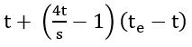
(Equation 7-3)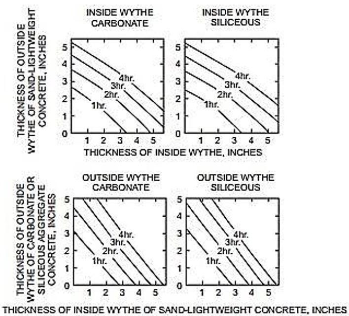
Type of Material | Thickness of Material (inches) | |||||||||||
1 1/2 | 2 | 2 1/2 | 3 | 3 1/2 | 4 | 4 1/2 | 5 | 5 1/2 | 6 | 6 1/2 | 7 | |
Type of Material | Thickness of Material (inches) | |||||||||||
1 1/2 | 2 | 2 1/2 | 3 | 3 1/2 | 4 | 4 1/2 | 5 | 5 1/2 | 6 | 6 1/2 | 7 | |
Siliceous aggregate concrete | 5.3 | 6.5 | 8.1 | 9.5 | 11.3 | 13.0 | 14.9 | 16.9 | 18.8 | 20.7 | 22.8 | 25.1 |
Carbonate aggregate concrete | 5.5 | 7.1 | 8.9 | 10.4 | 12.0 | 14.0 | 16.2 | 18.1 | 20.3 | 21.9 | 24.7 | 27.2
c |
Sand-lightweight concrete | 6.5 | 8.2 | 10.5 | 12.8 | 15.5 | 18.1 | 20.7 | 23.3 | 26.0
c | Note c | Note c | Note c |
Lightweight concrete | 6.6 | 8.8 | 11.2 | 13.7 | 16.5 | 19.1 | 21.9 | 24.7 | 27.8
c | Note c | Note c | Note c |
Insulating concrete
a | 9.3 | 13.3 | 16.6 | 18.3 | 23.1 | 26.5
c | Note c | Note c | Note c | Note c | Note c | Note c |
Airspace
b | – | – | – | – | – | – | – | – | – | – | – | – |
Ra, Minutes | R0.59 |
60 120 180 240 | 11.20 16.85 21.41 25.37 |
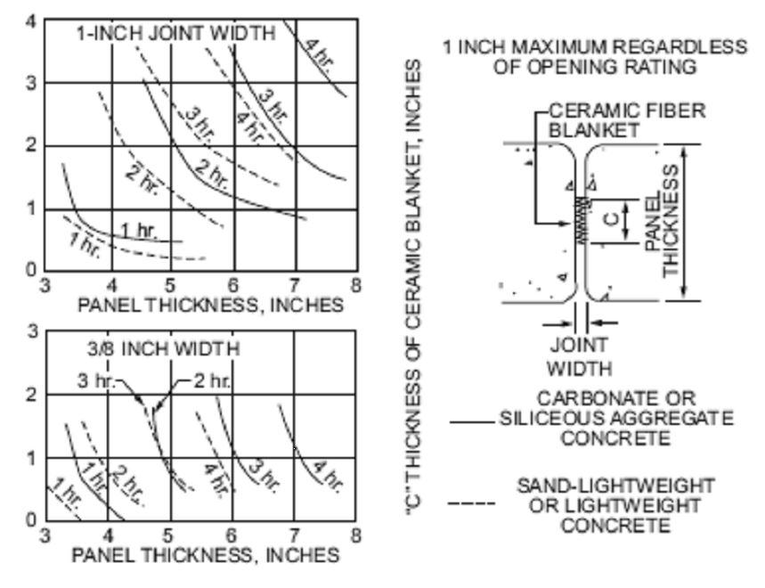
Type of Finish Applied to Concrete or Concrete Masonry Wall | Type of Aggregate Used in Concrete or Concrete Masonry | |||
Concrete: siliceous or carbonate Concrete Masonry: siliceous or carbonate; solid clay brick | Concrete: sand- lightweight Concrete Masonry: clay tile; hollow clay brick; concrete masonry units of expanded shale and <20% sand | Concrete: lightweight Concrete Masonry: concrete masonry units of expanded shale, expanded clay, expanded slag, or pumice < 20% sand | Concrete Masonry: concrete masonry units of expanded slag, expanded clay, or pumice | |
Portland cement-sand plaster | 1.00 | 0.75 a | 0.75 a | 0.50 a |
Gypsum-sand plaster | 1.25 | 1.00 | 1.00 | 1.00 |
Gypsum-vermiculite or perlite plaster | 1.75 | 1.50 | 1.25 | 1.25 |
Gypsum wallboard | 3.00 | 2.25 | 2.25 | 2.25 |
Finish Description | Time (minute) |
Finish Description | Time (minute) |
Gypsum wallbound | |
3/8 inch | 10 |
1/2 inch | 15 |
5/8 inch | 20 |
2 layers of 3/8 inch | 25 |
1 layer of 3/8 inch, 1 layer of 1/2 inch | 35 |
2 layers of 1/2 inch | 40 |
Type X gypsum wallboard | |
1/2 inch | 25 |
5/8 inch | 40 |
Portland cement-sand plaster applied directly to concrete masonry | See Note a |
Portland cement-sand plaster on metal lath | |
3/4 inch | 20 |
7/8 inch | 25 |
1 inch | 30 |
Gypsum sand laster on 3/8-inch gypsum lath | |
1/2 inch | 35 |
5/8 inch | 40 |
3/4 inch | 50 |
Gypsum sand plaster on metal lath | |
3/4 inch | 50 |
7/8 inch | 60 |
1 inch | 80 |
Concrete Type | Fire-Resistance Rating (hours) | ||||
1 | 1 1/2 | 2 | 3 | 4
| |
Siliceous | 3.5 | 4.3 | 5 | 6.2 | 7 |
Carbonate | 3.2 | 4 | 4.6 | 5.7 | 6.6 |
Sand- Lightweight | 2.7 | 3.3 | 3.8 | 4.6 | 5.4 |
Lightweight | 2.5 | 3.1 | 3.6 | 4.4 | 5.1 |
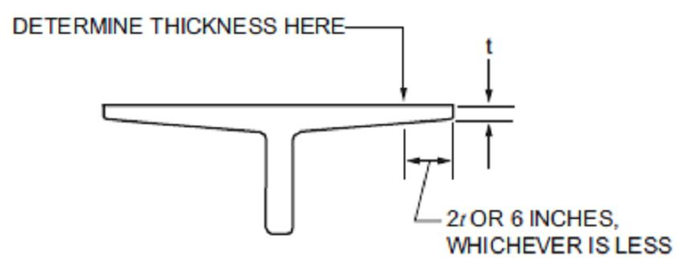
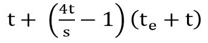
(Equation 7-5)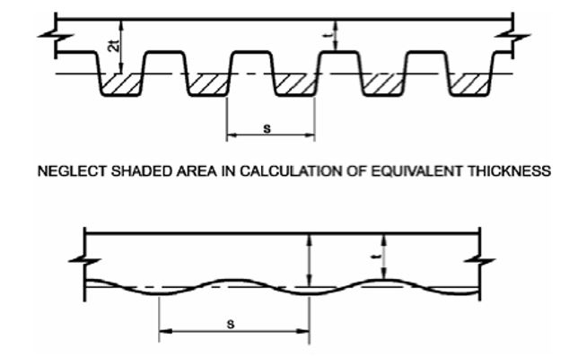
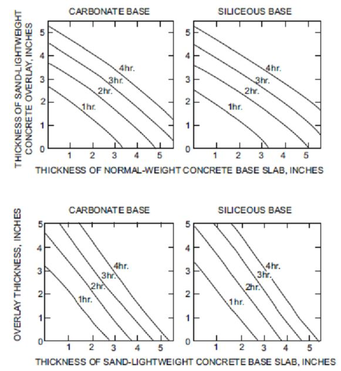
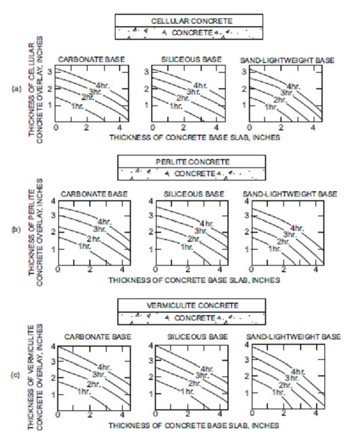
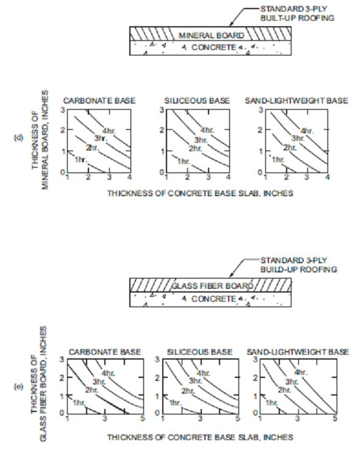
Concrete Aggregate Type | Fire-Resistance Rating (hours) | |||||||||
Restrained | Unrestrained | |||||||||
1 | 1 1/2 | 2 | 3 | 4 | 1 | 1 1/2 | 2 | 3 | 4 | |
Siliceous | 3/4 | 3/4 | 3/4 | 3/4 | 3/4 | 3/4 | 3/4 | 1 | 1 1/4 | 1 5/8 |
Carbonate | 3/4 | 3/4 | 3/4 | 3/4 | 3/4 | 3/4 | 3/4 | 3/4 | 1 1/4 | 1 1/4 |
Sand-lightweight or lightweight | 3/4 | 3/4 | 3/4 | 3/4 | 3/4 | 3/4 | 3/4 | 3/4 | 1 1/4 | 1 1/4 |
Concrete Aggregate Type | Fire-Resistance Rating (hours) | |||||||||
Restrained | Unrestrained | |||||||||
1 | 1 1/2 | 2 | 3 | 4 | 1 | 1 1/2 | 2 | 3 | 4 | |
Siliceous | 3/4 | 3/4 | 3/4 | 3/4 | 3/4 | 1 1/8 | 1 1/2 | 1 3/4 | 2 3/8 | 2 3/4 |
Carbonate | 3/4 | 3/4 | 3/4 | 3/4 | 3/4 | 1 | 1 3/8 | 1 5/8 | 2 1/8 | 2 1/4 |
Sand-lightweight or lightweight | 3/4 | 3/4 | 3/4 | 3/4 | 3/4 | 1 | 1 3/8 | 1 1/2 | 2 | 2 1/4 |
Restrained or Unrestrained a | Beam Width b (inches) | Fire-Resistance Rating (hours) | ||||
1 | 1 1/2 | 2 | 3 | 4 | ||
Restrained or Unrestrained a | Beam Width b (inches) | Fire-Resistance Rating (hours) | ||||
1 | 1 1/2 | 2 | 3 | 4 | ||
Restrained | 5 | 3/4 | 3/4 | 3/4 | 1
a | 1 1/4
a |
7 | 3/4 | 3/4 | 3/4 | 3/4 | 3/4 | |
≥10 | 3/4 | 3/4 | 3/4 | 3/4 | 3/4 | |
Unrestrained | 5 | 3/4 | 1 | 1 1/4 | — | — |
7 | 3/4 | 3/4 | 3/4 | 1 3/4 | 3 | |
≥10 | 3/4 | 3/4 | 3/4 | 1 | 1 3/4 | |
Restrained or Unrestrained a | Concrete Aggregate Type | Beam Width b (inches) | Fire-Resistance Rating (hours) | ||||
1 | 1 1/2 | 2 | 3 | 4 | |||
Restrained or Unrestrained a | Concrete Aggregate Type | Beam Width b (inches) | Fire-Resistance Rating (hours) | ||||
1 | 1 1/2 | 2 | 3 | 4 | |||
Restrained | Carbonate or siliceous | 8 | 1 1/2 | 1 1/2 | 1 1/2 | 1 3/4 a | 2 1/2 a |
Carbonate or siliceous | ≥12 | 1 1/2 | 1 1/2 | 1 1/2 | 1 1/2 | 1 7/8 a | |
Sand-lightweight | 8 | 1 1/2 | 1 1/2 | 1 1/2 | 1 1/2 | 2 a | |
Sand-lightweight | ≥12 | 1 1/2 | 1 1/2 | 1 1/2 | 1 1/2 | 1 5/8 a | |
Unrestrained | Carbonate or siliceous | 8 | 1 1/2 | 1 3/4 | 2 1/2 | 5
c | — |
Carbonate or siliceous | ≥12 | 1 1/2 | 1 1/2 | 1 7/8 a | 2 1/2 | 3 | |
Sand-lightweight | 8 | 1 1/2 | 1 1/2 | 2 | 3 1/4 | — | |
Sand-lightweight | ≥12 | 1 1/2 | 1 1/2 | 1 5/8 | 2 | 2 1/2 | |
Restrained or Unrestrained a | Concrete Aggregate Type | Beam Area b A (square inches) | Fire-Resistance Rating (hours) | ||||
1 | 1 1/2 | 2 | 3 | 4 | |||
Restrained or Unrestrained a | Concrete Aggregate Type | Beam Area b A (square inches) | Fire-Resistance Rating (hours) | ||||
1 | 1 1/2 | 2 | 3 | 4 | |||
Restrained | All | 40 ≤ A ≤ 150 | 1 1/2 | 1 1/2 | 2 | 2 1/2 | — |
Carbonate or siliceous | 150 < A ≤ 300 | 1 1/2 | 1 1/2 | 1 1/2 | 1 3/4 | 2 1/2 | |
300 < A | 1 1/2 | 1 1/2 | 1 1/2 | 1 1/2 | 2 | ||
Sand-lightweight | 150 < A | 1 1/2 | 1 1/2 | 1 1/2 | 1 1/2 | 2 | |
Unrestrained | All | 40 ≤ A ≤ 150 | 2 | 2 1/2 | — | — | — |
Carbonate or siliceous | 150 < A ≤ 300 | 1 1/2 | 1 3/4 | 2 1/2 | — | — | |
300 < A | 1 1/2 | 1 1/2 | 2 | 3
c | 4
c | ||
Sand-lightweight | 150 < A | 1 1/2 | 1 1/2 | 2 | 3
c | 4
c | |
Types of Concrete | Fire-Resistance Rating (hours) | ||||
1 | 1 1/2 | 2 a | 3 a | 4 b | |
Siliceous | 8 | 9 | 10 | 12 | 14 |
Carbonate | 8 | 9 | 10 | 11 | 12 |
Sand-lightweight | 8 | 8 1/2 | 9 | 10 1/2 | 12 |
Type of Aggregate
|
Fire-Resistance Rating (hours)
| ||||||||||||||
1/2 | 3/4 | 1 | 1 1/4 | 1 1/2 | 1 3/4 | 2 | 2 1/4 | 2 1/2 | 2 3/4 | 3 | 3 1/4 | 3 1/2 | 3 3/4 | 4
| |
Pumice or expanded slag | 1.5 | 1.9 | 2.1 | 2.5 | 2.7 | 3.0 | 3.2 | 3.4 | 3.6 | 3.8 | 4.0 | 4.2 | 4.4 | 4.5 | 4.7 |
Expanded shale, clay or slate | 1.8 | 2.2 | 2.6 | 2.9 | 3.3 | 3.4 | 3.6 | 3.8 | 4.0 | 4.2 | 4.4 | 4.6 | 4.8 | 4.9 | 5.1 |
Limestone, cinders or unexpanded slag | 1.9 | 2.3 | 2.7 | 3.1 | 3.4 | 3.7 | 4.0 | 4.3 | 4.5 | 4.8 | 5.0 | 5.2 | 5.5 | 5.7 | 5.9 |
Calcareous or siliceous gravel | 2.0 | 2.4 | 2.8 | 3.2 | 3.6 | 3.9 | 4.2 | 4.5 | 4.8 | 5.0 | 5.3 | 5.5 | 5.8 | 6.0 | 6.2 |
Nominal Width of Lintel (inches) | Fire-Resistance Rating (hours) | |||
1 | 2 | 3 | 4 | |
6 | 1 1/2 | 2 | — | — |
8 | 1 1/2 | 1 1/2 | 1 3/4 | 3 |
10 or greater | 1 1/2 | 1 1/2 | 1 1/2 | 1 3/4 |
Fire-Resistance Rating (hours) | |||
1 | 2 | 3 | 4 |
8 inches | 10 inches | 12 inches | 14 inches |
Material Type | Minimum Required Equivalent Thickness for Fire Resistance a, b, c (Inches) | |||
1 hour | 2 hours | 3 hours | 4 hours | |
Solid brick of clay or shale
d | 2.7 | 3.8 | 4.9 | 6.0 |
Hollow brick or tile of clay or shale, unfilled | 2.3 | 3.4 | 4.3 | 5.0 |
Hollow brick or tile of clay or shale, grouted or filled with materials specified in Section 722.4.1.1.3 | 3.0 | 4.4 | 5.5 | 6.6 |
Wall or Partition Assembly | Plaster Side Exposed (hours) | Brick Faced Side Exposed (hours) |
Outside facing of steel studs: 1/2" wood fiberboard sheathing next to studs, 3/4" airspace formed with 3/4" × 1 5/8" wood strips placed over the fiberboard and secured to the studs; metal or wire lath nailed to such strips, 3 3/4" brick veneer held in place by filling 3/4" airspace between the brick and lath with mortar. Inside facing of studs: 3/4" unsanded gypsum plaster on metal or wire lath attached to 5/16" wood strips secured to edges of the studs. | 1.5 | 4 |
Outside facing of steel studs: 1" insulation board sheathing attached to studs, 1" airspace, and 3 3/4" brick veneer attached to steel frame with metal ties every 5th course. Inside facing of studs: 7/8" sanded gypsum plaster (1:2 mix) applied on metal or wire lath attached directly to the studs. | 1.5 | 4 |
Same as above except use 7/8" vermiculite – gypsum plaster or 1" sanded gypsum plaster (1:2 mix) applied to metal or wire | 2 | 4 |
Outside facing of steel studs: 1/2" gypsum sheathing board, attached to studs, and 3 3/4" brick veneer attached to steel frame with metal ties every 5th course. Inside facing of studs: 1/2" sanded gypsum plaster (1:2 mix) applied to 1/2" perforated gypsum lath securely attached to studs and having strips of metal lath 3 inches wide applied to all horizontal joints of gypsum lath. | 2 | 4 |
Rn0.59 | R (hours) |
1 | 1.0 |
2 | 1.50 |
3 | 1.91 |
4 | 2.27 |
Thickness of Plaster (inch) | One Side | Two Sides |
1/2 | 0.3 | 0.6 |
5/8 | 0.37 | 0.75 |
3/4 | 0.45 | 0.90 |
Nominal Lintel Width (inches) | Minimum Longitudinal Reinforcement Cover For Fire Resistance (inches) | |||
1 hour | 2 hours | 3 hours | 4 hours | |
6 | 1 1/2 | 2 | NP | NP |
8 | 1 1/2 | 1 1/2 | 1 3/4 | 3 |
10 or more | 1 1/2 | 1 1/2 | 1 1/2 | 1 3/4 |
Column Size | Fire-Resistance Rating (hours) | |||
1 | 2 | 3 | 4 | |
Minimum column dimension (inches) | 8 | 10 | 12 | 14 |
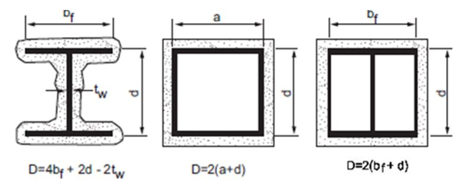
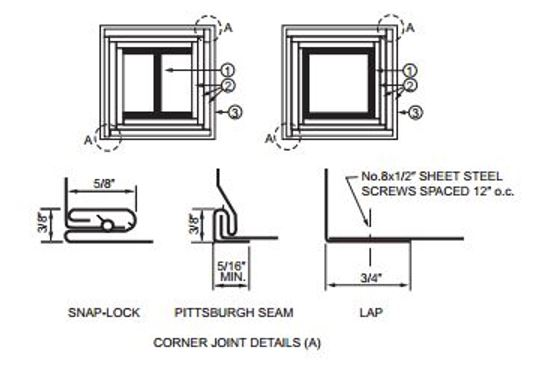
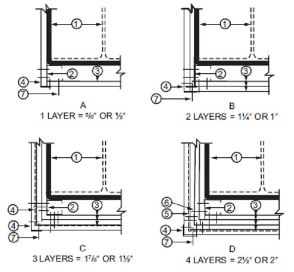
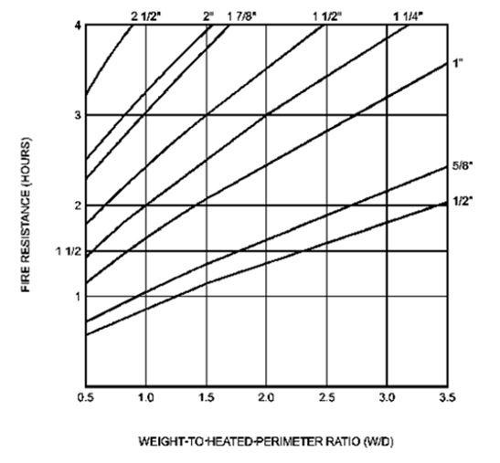
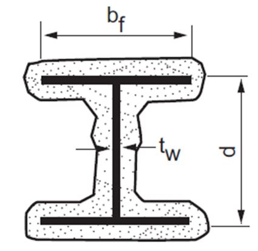
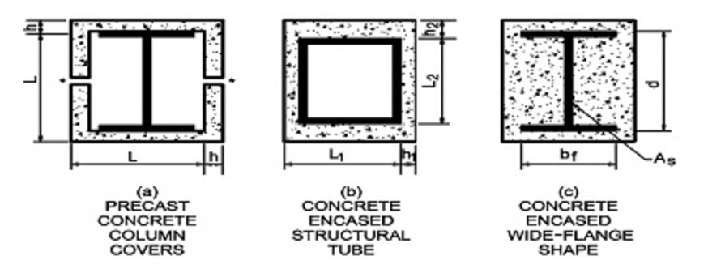
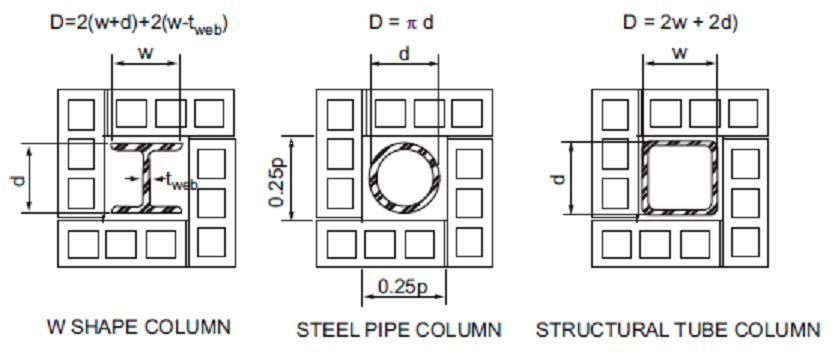
Structural Shape | Contour Profile | Box Profile | Structural Shape | Contour Profile | Box Profile |
Structural Shape | Contour Profile | Box Profile | Structural Shape | Contour Profile | Box Profile |
W14 × 233 | 2.55 | 3.65 | W10 × 112 | 1.81 | 2.57 |
× 211 | 2.32 | 3.35 | × 100 | 1.64 | 2.33 |
× 193 | 2.14 | 3.09 | × 88 | 1.45 | 2.08 |
× 176 | 1.96 | 2.85 | × 77 | 1.28 | 1.85 |
× 159 | 1.78 | 2.60 | × 68 | 1.15 | 1.66 |
× 145 | 1.64 | 2.39 | × 60 | 1.01 | 1.48 |
× 132 | 1.56 | 2.25 | × 54 | 0.922 | 1.34 |
× 120 | 1.42 | 2.06 | × 49 | 0.84 | 1.23 |
× 109 | 1.29 | 1.88 | × 45 | 0.888 | 1.24 |
× 99 | 1.18 | 1.72 | × 39 | 0.78 | 1.09 |
× 90 | 1.08 | 1.58 | × 33 | 0.661 | 0.93 |
× 82 | 1.23 | 1.68 | |||
× 74 | 1.12 | 1.53 | W8 × 67 | 1.37 | 1.94 |
× 68 | 1.04 | 1.41 | × 58 | 1.20 | 1.71 |
× 61 | 0.928 | 1.28 | × 48 | 1.00 | 1.44 |
× 53 | 0.915 | 1.21 | × 40 | 0.849 | 1.23 |
× 48 | 0.835 | 1.10 | × 35 | 0.749 | 1.08 |
× 43 | 0.752 | 0.99 | × 31 | 0.665 | 0.97 |
× 28 | 0.688 | 0.96 | |||
W12 × 190 | 2.50 | 3.51 | × 24 | 0.591 | 0.83 |
× 170 | 2.26 | 3.20 | × 21 | 0.577 | 0.77 |
× 152 | 2.04 | 2.90 | × 18 | 0.499 | 0.67 |
× 136 | 1.86 | 2.63 | |||
× 120 | 1.65 | 2.36 | W6 × 25 | 0.696 | 1.00 |
× 106 | 1.47 | 2.11 | × 20 | 0.563 | 0.82 |
× 96 | 1.34 | 1.93 | × 16 | 0.583 | 0.78 |
× 87 | 1.22 | 1.76 | × 15 | 0.431 | 0.63 |
× 79 | 1.11 | 1.61 | × 12 | 0.448 | 0.60 |
× 72 | 1.02 | 1.48 | × 9 | 0.338 | 0.46 |
× 65 | 0.925 | 1.35 | |||
× 58 | 0.925 | 1.31 | W5 × 19 | 0.644 | 0.93 |
× 53 | 0.855 | 1.20 | × 16 | 0.55 | 0.80 |
× 50 | 0.909 | 1.23 | |||
× 45 | 0.829 | 1.12 | W4 × 13 | 0.556 | 0.79 |
× 40 | 0.734 | 1.00 | |||
Property | Normal Weight Concrete | Structural Lightweight Concrete |
Thermal conductivity (k
c
) | 0.95 Btu/hr • ft • °F | 0.35 Btu/hr • ft • °F |
Specific heat (c
c
) | 0.20 Btu/lb °F | 0.20 Btu/lb °F |
Density (P
c
) | 145 lb/ft
3 | 110 lb/ft
3 |
Equilibrium (free) moisture content (m) by volume | 4% | 5% |
Density (dm) of Units (lb/ft3) | Thermal Conductivity (K) of Units (Btu/hr • ft • °F) |
Concrete Masonry Units | |
Density (dm) of Units (lb/ft3) | Thermal Conductivity (K) of Units (Btu/hr • ft • °F) |
Concrete Masonry Units | |
80 | 0.207 |
85 | 0.228 |
90 | 0.252 |
95 | 0.278 |
100 | 0.308 |
105 | 0.340 |
110 | 0.376 |
115 | 0.416 |
120 | 0.459 |
125 | 0.508 |
130 | 0.561 |
135 | 0.620 |
140 | 0.685 |
145 | 0.758 |
150 | 0.837 |
Clay Masonry Units | |
120 | 1.25 |
130 | 2.25 |
Structural Shape | Contour Profile | Box Profile | Structural Shape | Contour Profile | Box Profile |
Structural Shape | Contour Profile | Box Profile | Structural Shape | Contour Profile | Box Profile |
W36 × 300 | 2.50 | 3.33 | W24 × 68 | 0.942 | 1.21 |
× 280 | 2.35 | 3.12 | × 62 | 0.934 | 1.14 |
× 260 | 2.18 | 2.92 | × 55 | 0.828 | 1.02 |
× 245 | 2.08 | 2.76 | |||
× 230 | 1.95 | 2.61 | W21 × 147 | 1.87 | 2.60 |
× 210 | 1.96 | 2.45 | × 132 | 1.68 | 2.35 |
× 194 | 1.81 | 2.28 | × 122 | 1.57 | 2.19 |
× 182 | 1.72 | 2.15 | × 111 | 1.43 | 2.01 |
× 170 | 1.60 | 2.01 | × 101 | 1.30 | 1.84 |
× 160 | 1.51 | 1.90 | × 93 | 1.40 | 1.80 |
× 150 | 1.43 | 1.79 | × 83 | 1.26 | 1.62 |
× 135 | 1.29 | 1.63 | × 73 | 1.11 | 1.44 |
× 68 | 1.04 | 1.35 | |||
W33 × 241 | 2.13 | 2.86 | W21 × 62 | 0.952 | 1.23 |
× 221 | 1.97 | 2.64 | × 57 | 0.952 | 1.17 |
× 201 | 1.79 | 2.42 | × 50 | 0.838 | 1.04 |
× 152 | 1.53 | 1.94 | × 44 | 0.746 | 0.92 |
× 141 | 1.43 | 1.80 | |||
× 130 | 1.32 | 1.67 | W18 × 119 | 1.72 | 2.42 |
× 118 | 1.21 | 1.53 | × 106 | 1.55 | 2.18 |
× 97 | 1.42 | 2.01 | |||
W30 × 211 | 2.01 | 2.74 | × 86 | 1.27 | 1.80 |
× 191 | 1.85 | 2.50 | × 76 | 1.13 | 1.60 |
× 173 | 1.66 | 2.28 | × 71 | 1.22 | 1.59 |
× 132 | 1.47 | 1.85 | × 65 | 1.13 | 1.47 |
× 124 | 1.39 | 1.75 | × 60 | 1.04 | 1.36 |
× 116 | 1.30 | 1.65 | × 55 | 0.963 | 1.26 |
× 108 | 1.21 | 1.54 | × 50 | 0.88 | 1.15 |
× 99 | 1.12 | 1.42 | × 46 | 0.878 | 1.09 |
× 40 | 0.768 | 0.96 | |||
W27 × 178 | 1.87 | 2.55 | × 35 | 0.672 | 0.85 |
× 161 | 1.70 | 2.33 | |||
× 146 | 1.55 | 2.12 | W16 × 100 | 1.59 | 2.25 |
× 114 | 1.39 | 1.76 | × 89 | 1.43 | 2.03 |
× 102 | 1.24 | 1.59 | × 77 | 1.25 | 1.78 |
× 94 | 1.15 | 1.47 | × 67 | 1.09 | 1.56 |
× 84 | 1.03 | 1.33 | × 57 | 1.09 | 1.43 |
× 50 | 0.962 | 1.26 | |||
× 45 | 0.870 | 1.15 | |||
W24 × 162 | 1.88 | 2.57 | × 40 | 0.780 | 1.03 |
× 146 | 1.70 | 2.34 | × 36 | 0.702 | 0.93 |
× 131 | 1.54 | 2.12 | × 31 | 0.661 | 0.83 |
× 117 | 1.38 | 1.91 | × 26 | 0.558 | 0.70 |
× 104 | 1.24 | 1.71 | |||
× 94 | 1.28 | 1.63 | W14 × 132 | 1.89 | 3.00 |
x 84 | 1.15 | 1.47 | x 120 | 1.71 | 2.75 |
× 76 | 1.05 | 1.34 | × 109 | 1.57 | 2.52 |
W14 × 99 | 1.43 | 2.31 | W10 × 30 | 0.806 | 1.12 |
× 90 | 1.31 | 2.11 | × 26 | 1.708 | 0.98 |
× 82 | 1.45 | 2.12 | × 22 | 0.606 | 0.84 |
× 74 | 1.32 | 1.93 | × 19 | 0.607 | 0.78 |
× 68 | 1.22 | 1.78 | × 17 | 0.543 | 0.70 |
× 61 | 1.10 | 1.61 | × 15 | 0.484 | 0.63 |
× 53 | 1.06 | 1.48 | × 12 | 0.392 | 0.51 |
× 48 | 0.970 | 1.35 | |||
W14 × 43 | 0.874 | 1.22 | W8 × 67 | 1.65 | 2.55 |
× 38 | 0.809 | 1.09 | × 58 | 1.44 | 2.26 |
× 34 | 0.725 | 0.98 | × 48 | 1.21 | 1.91 |
× 30 | 0.644 | 0.87 | × 40 | 1.03 | 1.63 |
× 26 | 0.628 | 0.79 | × 35 | 0.907 | 1.44 |
× 22 | 0.534 | 0.68 | × 31 | 0.803 | 1.29 |
× 28 | 0.819 | 1.24 | |||
W12 × 87 | 1.47 | 2.34 | × 24 | 0.704 | 1.07 |
× 79 | 1.34 | 2.14 | × 21 | 0.675 | 0.96 |
× 72 | 1.23 | 1.97 | × 18 | 0.583 | 0.84 |
× 65 | 1.11 | 1.79 | × 15 | 0.551 | 0.74 |
× 58 | 1.10 | 1.69 | × 13 | 0.483 | 0.65 |
× 53 | 1.02 | 1.55 | × 10 | 0.375 | 0.51 |
× 50 | 1.06 | 1.54 | |||
× 45 | 0.974 | 1.40 | W6 × 25 | 0.839 | 1.33 |
× 40 | 0.860 | 1.25 | × 20 | 0.678 | 1.09 |
× 35 | 0.810 | 1.11 | × 16 | 0.684 | 0.96 |
× 30 | 0.699 | 0.96 | × 15 | 0.521 | 0.83 |
× 26 | 0.612 | 0.84 | × 12 | 0.526 | 0.75 |
× 22 | 0.623 | 0.77 | × 9 | 0.398 | 0.57 |
× 19 | 0.540 | 0.67 | |||
× 16 | 0.457 | 0.57 | W5 × 19 | 0.776 | 1.24 |
× 14 | 0.405 | 0.50 | × 16 | 0.664 | 1.07 |
W10 × 112 | 2.17 | 3.38 | W4 × 13 | 0.670 | 1.05 |
× 100 | 1.97 | 3.07 | |||
× 88 | 1.74 | 2.75 | |||
× 77 | 1.54 | 2.45 | |||
× 68 | 1.38 | 2.20 | |||
× 60 | 1.22 | 1.97 | |||
× 54 | 1.11 | 1.79 | |||
× 49 | 1.01 | 1.64 | |||
× 45 | 1.06 | 1.59 | |||
× 39 | 0.94 | 1.40 | |||
× 33 | 0.77 | 1.20 | |||
Column Size | Concrete Masonry Density Pounds per Cubic Foot | Minimum Required Equivalent Thickness for Fire-Resistance Rating of Concrete Masonry Protection Assembly, Te (inches) | Column Size | Concrete Masonry Density Pounds per Cubic Foot | Minimum Required Equivalent Thickness for Fire-Resistance Rating of Concrete Masonry Protection Assembly, Te (Inches) | ||||||
1 hour | 2 hours | 3 hours | 4 hours | 1 hour | 2 hours | 3 hours | 4 hours | ||||
Column Size | Concrete Masonry Density Pounds per Cubic Foot | Minimum Required Equivalent Thickness for Fire-Resistance Rating of Concrete Masonry Protection Assembly, Te (inches) | Column Size | Concrete Masonry Density Pounds per Cubic Foot | Minimum Required Equivalent Thickness for Fire-Resistance Rating of Concrete Masonry Protection Assembly, Te (Inches) | ||||||
1 hour | 2 hours | 3 hours | 4 hours | 1 hour | 2 hours | 3 hours | 4 hours | ||||
W14 × 82 | 80 | 0.74 | 1.61 | 2.36 | 3.04 | W10 × 68 | 80 | 0.72 | 1.58 | 2.33 | 3.01 |
100 | 0.89 | 1.85 | 2.67 | 3.40 | 100 | 0.87 | 1.83 | 2.65 | 3.38 | ||
110 | 0.96 | 1.97 | 2.81 | 3.57 | 110 | 0.94 | 1.95 | 2.79 | 3.55 | ||
120 | 1.03 | 2.08 | 2.95 | 3.73 | 120 | 1.01 | 2.06 | 2.94 | 3.72 | ||
W14 × 68 | 80 | 0.83 | 1.70 | 2.45 | 3.13 | W10 × 54 | 80 | 0.88 | 1.76 | 2.53 | 3.21 |
100 | 0.99 | 1.95 | 2.76 | 3.49 | 100 | 1.04 | 2.01 | 2.83 | 3.57 | ||
110 | 1.06 | 2.06 | 2.91 | 3.66 | 110 | 1.11 | 2.12 | 2.98 | 3.73 | ||
120 | 1.14 | 2.18 | 3.05 | 3.82 | 120 | 1.19 | 2.24 | 3.12 | 3.90 | ||
W14 × 53 | 80 | 0.91 | 1.81 | 2.58 | 3.27 | W10 × 45 | 80 | 0.92 | 1.83 | 2.60 | 3.30 |
100 | 1.07 | 2.05 | 2.88 | 3.62 | 100 | 1.08 | 2.07 | 2.90 | 3.64 | ||
110 | 1.15 | 2.17 | 3.02 | 3.78 | 110 | 1.16 | 2.18 | 3.04 | 3.80 | ||
120 | 1.22 | 2.28 | 3.16 | 3.94 | 120 | 1.23 | 2.29 | 3.18 | 3.96 | ||
W14 × 43 | 80 | 1.01 | 1.93 | 2.71 | 3.41 | W10 × 33 | 80 | 1.06 | 2.00 | 2.79 | 3.49 |
100 | 1.17 | 2.17 | 3.00 | 3.74 | 100 | 1.22 | 2.23 | 3.07 | 3.81 | ||
110 | 1.25 | 2.28 | 3.14 | 3.90 | 110 | 1.30 | 2.34 | 3.20 | 3.96 | ||
120 | 1.32 | 2.38 | 3.27 | 4.05 | 120 | 1.37 | 2.44 | 3.33 | 4.12 | ||
W12 × 72 | 80 | 0.81 | 1.66 | 2.41 | 3.09 | W8 × 40 | 80 | 0.94 | 1.85 | 2.63 | 3.33 |
100 | 0.91 | 1.88 | 2.70 | 3.43 | 100 | 1.10 | 2.10 | 2.93 | 3.67 | ||
110 | 0.99 | 1.99 | 2.84 | 3.60 | 110 | 1.18 | 2.21 | 3.07 | 3.83 | ||
120 | 1.06 | 2.10 | 2.98 | 3.76 | 120 | 1.25 | 2.32 | 3.20 | 3.99 | ||
W12 × 58 | 80 | 0.88 | 1.76 | 2.52 | 3.21 | W8 × 31 | 80 | 1.06 | 2.00 | 2.78 | 3.49 |
100 | 1.04 | 2.01 | 2.83 | 3.56 | 100 | 1.22 | 2.23 | 3.07 | 3.81 | ||
110 | 1.11 | 2.12 | 2.97 | 3.73 | 110 | 1.29 | 2.33 | 3.20 | 3.97 | ||
120 | 1.19 | 2.23 | 3.11 | 3.89 | 120 | 1.36 | 2.44 | 3.33 | 4.12 | ||
W12 × 50 | 80 | 0.91 | 1.81 | 2.58 | 3.27 | W8 × 24 | 80 | 1.14 | 2.09 | 2.89 | 3.59 |
100 | 1.07 | 2.05 | 2.88 | 3.62 | 100 | 1.29 | 2.31 | 3.16 | 3.90 | ||
110 | 1.15 | 2.17 | 3.02 | 3.78 | 110 | 1.36 | 2.42 | 3.28 | 4.05 | ||
120 | 1.22 | 2.28 | 3.16 | 3.94 | 120 | 1.43 | 2.52 | 3.41 | 4.20 | ||
W12 × 40 | 80 | 1.01 | 1.94 | 2.72 | 3.41 | W8 × 18 | 80 | 1.22 | 2.20 | 3.01 | 3.72 |
100 | 1.17 | 2.17 | 3.01 | 3.75 | 100 | 1.36 | 2.40 | 3.25 | 4.01 | ||
110 | 1.25 | 2.28 | 3.14 | 3.90 | 110 | 1.42 | 2.50 | 3.37 | 4.14 | ||
120 | 1.32 | 2.39 | 3.27 | 4.06 | 120 | 1.48 | 2.59 | 3.49 | 4.28 | ||
4 × 4 × 1/2 wall thickness | 80 | 0.93 | 1.90 | 2.71 | 3.43 | 4 double extra strong 0.674 wall thickness | 80 | 0.80 | 1.75 | 2.56 | 3.28 |
100 | 1.08 | 2.13 | 2.99 | 3.76 | 100 | 0.95 | 1.99 | 2.85 | 3.62 | ||
110 | 1.16 | 2.24 | 3.13 | 3.91 | 110 | 1.02 | 2.10 | 2.99 | 3.78 | ||
120 | 1.22 | 2.34 | 3.26 | 4.06 | 120 | 1.09 | 2.20 | 3.12 | 3.93 | ||
4 × 4 × 3/8 wall thickness | 80 | 1.05 | 2.03 | 2.84 | 3.57 | 4 extra strong 0.337 wall thickness | 80 | 1.12 | 2.11 | 2.93 | 3.65 |
100 | 1.20 | 2.25 | 3.11 | 3.88 | 100 | 1.26 | 2.32 | 3.19 | 3.95 | ||
110 | 1.27 | 2.35 | 3.24 | 4.02 | 110 | 1.33 | 2.42 | 3.31 | 4.09 | ||
120 | 1.34 | 2.45 | 3.37 | 4.17 | 120 | 1.40 | 2.52 | 3.43 | 4.23 | ||
4 × 4 × 1/4 wall thickness | 80 | 1.21 | 2.20 | 3.01 | 3.73 | 4 standard 0.237 wall thickness | 80 | 1.26 | 2.25 | 3.07 | 3.79 |
100 | 1.35 | 2.40 | 3.26 | 4.02 | 100 | 1.40 | 2.45 | 3.31 | 4.07 | ||
110 | 1.41 | 2.50 | 3.38 | 4.16 | 110 | 1.46 | 2.55 | 3.43 | 4.21 | ||
120 | 1.48 | 2.59 | 3.50 | 4.30 | 120 | 1.53 | 2.64 | 3.54 | 4.34 | ||
6 × 6 × 1/2 wall thickness | 80 | 0.82 | 1.75 | 2.54 | 3.25 | 5 double extra strong 0.750 wall thickness | 80 | 0.70 | 1.61 | 2.40 | 3.12 |
100 | 0.98 | 1.99 | 2.84 | 3.59 | 100 | 0.85 | 1.86 | 2.71 | 3.47 | ||
110 | 1.05 | 2.10 | 2.98 | 3.75 | 110 | 0.91 | 1.97 | 2.85 | 3.63 | ||
120 | 1.12 | 2.21 | 3.11 | 3.91 | 120 | 0.98 | 2.02 | 2.99 | 3.79 | ||
6 × 6 × 3/8 wall thickness | 80 | 0.96 | 1.91 | 2.71 | 3.42 | 5 extra strong 0.375 wall thickness | 80 | 1.04 | 2.01 | 2.83 | 3.54 |
100 | 1.12 | 2.14 | 3.00 | 3.75 | 100 | 1.19 | 2.23 | 3.09 | 3.85 | ||
110 | 1.19 | 2.25 | 3.13 | 3.90 | 110 | 1.26 | 2.34 | 3.22 | 4.00 | ||
120 | 1.26 | 2.35 | 3.26 | 4.05 | 120 | 1.32 | 2.44 | 3.34 | 4.14 | ||
6 × 6 × 1/4 wall thickness | 80 | 1.14 | 2.11 | 2.92 | 3.63 | 5 standard 0.258 wall thickness | 80 | 1.20 | 2.19 | 3.00 | 3.72 |
100 | 1.29 | 2.32 | 3.18 | 3.93 | 100 | 1.34 | 2.39 | 3.25 | 4.00 | ||
110 | 1.36 | 2.43 | 3.30 | 4.08 | 110 | 1.41 | 2.49 | 3.37 | 4.14 | ||
120 | 1.42 | 2.52 | 3.43 | 4.22 | 120 | 1.47 | 2.58 | 3.49 | 4.28 | ||
8 × 8 × 1/2 wall thickness | 80 | 0.77 | 1.66 | 2.44 | 3.13 | 6 double extra strong 0.864 wall thickness | 80 | 0.59 | 1.46 | 2.23 | 2.92 |
100 | 0.92 | 1.91 | 2.75 | 3.49 | 100 | 0.73 | 1.71 | 2.54 | 3.29 | ||
110 | 1.00 | 2.02 | 2.89 | 3.66 | 110 | 0.80 | 1.82 | 2.69 | 3.47 | ||
120 | 1.07 | 2.14 | 3.03 | 3.82 | 120 | 0.86 | 1.93 | 2.83 | 3.63 | ||
8 × 8 × 3/8 wall thickness | 80 | 0.91 | 1.84 | 2.63 | 3.33 | 6 extra strong 0.432 wall thickness | 80 | 0.94 | 1.90 | 2.70 | 3.42 |
100 | 1.07 | 2.08 | 2.92 | 3.67 | 100 | 1.10 | 2.13 | 2.98 | 3.74 | ||
110 | 1.14 | 2.19 | 3.06 | 3.83 | 110 | 1.17 | 2.23 | 3.11 | 3.89 | ||
120 | 1.21 | 2.29 | 3.19 | 3.98 | 120 | 1.24 | 2.34 | 3.24 | 4.04 | ||
8 × 8 × 1/4 wall thickness | 80 | 1.10 | 2.06 | 2.86 | 3.57 | 6 standard 0.280 wall thickness | 80 | 1.14 | 2.12 | 2.93 | 3.64 |
100 | 1.25 | 2.28 | 3.13 | 3.87 | 100 | 1.29 | 2.33 | 3.19 | 3.94 | ||
110 | 1.32 | 2.38 | 3.25 | 4.02 | 110 | 1.36 | 2.43 | 3.31 | 4.08 | ||
120 | 1.39 | 2.48 | 3.38 | 4.17 | 120 | 1.42 | 2.53 | 3.43 | 4.22 | ||
Column Size | Clay Masonry Density, Pounds per Cubic Foot | Minimum Required Equivalent Thickness For Fire-Resistance Rating of Clay Masonry Protection Assembly, Te (inches) | Column Size | Clay Masonry Density, Pounds per Cubic Foot | Minimum Required Equivalent Thickness For Fire-Resistance Rating of Clay Masonry Protection Assembly, Te (inches) | ||||||
1 hour | 2 hours | 3 hours | 4 hours | 1 hour | 2 hours | 3 hours | 4 hours | ||||
W14 × 82 | 120 | 1.23 | 2.42 | 3.41 | 4.29 | W10 × 68 | 120 | 1.27 | 2.46 | 3.26 | 4.35 |
130 | 1.40 | 2.70 | 3.78 | 4.74 | 130 | 1.44 | 2.75 | 3.83 | 4.80 | ||
W14 × 68 | 120 | 1.34 | 2.54 | 3.54 | 4.43 | W10 × 54 | 120 | 1.40 | 2.61 | 3.62 | 4.51 |
130 | 1.51 | 2.82 | 3.91 | 4.87 | 130 | 1.58 | 2.89 | 3.98 | 4.95 | ||
W14 × 53 | 120 | 1.43 | 2.65 | 3.65 | 4.54 | W10 × 45 | 120 | 1.44 | 2.66 | 3.67 | 4.57 |
130 | 1.61 | 2.93 | 4.02 | 4.98 | 130 | 1.62 | 2.95 | 4.04 | 5.01 | ||
W14 × 43 | 120 | 1.54 | 2.76 | 3.77 | 4.66 | W10 × 33 | 120 | 1.59 | 2.82 | 3.84 | 4.73 |
130 | 1.72 | 3.04 | 4.13 | 5.09 | 130 | 1.77 | 3.10 | 4.20 | 5.13 | ||
W12 × 72 | 120 | 1.32 | 2.52 | 3.51 | 4.40 | W8 × 40 | 120 | 1.47 | 2.70 | 3.71 | 4.61 |
130 | 1.50 | 2.80 | 3.88 | 4.84 | 130 | 1.65 | 2.98 | 4.08 | 5.04 | ||
W12 × 58 | 120 | 1.40 | 2.61 | 3.61 | 4.50 | W8 × 31 | 120 | 1.59 | 2.82 | 3.84 | 4.73 |
130 | 1.57 | 2.89 | 3.98 | 4.94 | 130 | 1.77 | 3.10 | 4.20 | 5.17 | ||
W12 × 50 | 120 | 1.43 | 2.65 | 3.66 | 4.55 | W8 × 24 | 120 | 1.66 | 2.90 | 3.92 | 4.82 |
130 | 1.61 | 2.93 | 4.02 | 4.99 | 130 | 1.84 | 3.18 | 4.28 | 5.25 | ||
W12 × 40 | 120 | 1.54 | 2.77 | 3.78 | 4.67 | W8 × 18 | 120 | 1.75 | 3.00 | 4.01 | 4.91 |
130 | 1.72 | 3.05 | 4.14 | 5.10 | 130 | 1.93 | 3.27 | 4.37 | 5.34 | ||
Nominal tube size (inches) | Clay masonry density, pounds per cubic foot | Minimum required equivalent thickness for fire-resistance rating of clay. Masonry protection assembly Te, (inches) | Nominal tube size (inches) | Clay masonry density, pounds per cubic foot | Minimum required equivalent thickness for fire-resistance rating of clay. Masonry protection assembly Te, (inches) | ||||||
1-hour | 2-hour | 3-hour | 4-hour | 1-hour | 2-hour | 3-hour | 4-hour | ||||
4 × 4 × 1/2 wall thickness | 120 | 1.44 | 2.72 | 3.76 | 4.68 | 4 double extra strong 0.674 wall thickness | 120 | 1.26 | 2.55 | 3.60 | 4.52 |
130 | 1.62 | 3.00 | 4.12 | 5.11 | 130 | 1.42 | 2.82 | 3.96 | 4.95 | ||
4 × 4 × 3/8 wall thickness | 120 | 1.56 | 2.84 | 3.88 | 4.78 | 4 extra strong 0.337 wall thickness | 120 | 1.60 | 2.89 | 3.92 | 4.83 |
130 | 1.74 | 3.12 | 4.23 | 5.21 | 130 | 1.77 | 3.16 | 4.28 | 5.25 | ||
4 × 4 × 1/4 wall thickness | 120 | 1.72 | 2.99 | 4.02 | 4.92 | 4 standard 0.237 wall thickness | 120 | 1.74 | 3.02 | 4.05 | 4.95 |
130 | 1.89 | 3.26 | 4.37 | 5.34 | 130 | 1.92 | 3.29 | 4.40 | 5.37 | ||
6 × 6 × 1/2 wall thickness | 120 | 1.33 | 2.58 | 3.62 | 4.52 | 5 double extra strong 0.750 wall thickness | 120 | 1.17 | 2.44 | 3.48 | 4.40 |
130 | 1.50 | 2.86 | 3.98 | 4.96 | 130 | 1.33 | 2.72 | 3.84 | 4.83 | ||
6 × 6 × 3/8 wall thickness | 120 | 1.48 | 2.74 | 3.76 | 4.67 | 5 extra strong 0.375 wall thickness | 120 | 1.55 | 2.82 | 3.85 | 4.76 |
130 | 1.65 | 3.01 | 4.13 | 5.10 | 130 | 1.72 | 3.09 | 4.21 | 5.18 | ||
6 × 6 × 1/4 wall thickness | 120 | 1.66 | 2.91 | 3.94 | 4.84 | 5 standard 0.258 wall thickness | 120 | 1.71 | 2.97 | 4.00 | 4.90 |
130 | 1.83 | 3.19 | 4.30 | 5.27 | 130 | 1.88 | 3.24 | 4.35 | 5.32 | ||
8 × 8 × 1/2 wall thickness | 120 | 1.27 | 2.50 | 3.52 | 4.42 | 6 double extra strong 0.864 wall thickness | 120 | 1.04 | 2.28 | 3.32 | 4.23 |
130 | 1.44 | 2.78 | 3.89 | 4.86 | 130 | 1.19 | 2.60 | 3.68 | 4.67 | ||
8 × 8 × 3/8 wall thickness | 120 | 1.43 | 2.67 | 3.69 | 4.59 | 6 extra strong 0.432 wall thickness | 120 | 1.45 | 2.71 | 3.75 | 4.65 |
130 | 1.60 | 2.95 | 4.05 | 5.02 | 130 | 1.62 | 2.99 | 4.10 | 5.08 | ||
8 × 8 × 1/4 wall thickness | 120 | 1.62 | 2.87 | 3.89 | 4.78 | 6 standard 0.280 wall thickness | 120 | 1.65 | 2.91 | 3.94 | 4.84 |
130 | 1.79 | 3.14 | 4.24 | 5.21 | 130 | 1.82 | 3.19 | 4.30 | 5.27 | ||
Structural Shape | Fire-Resistance Rating (hours) | ||||
1 | 1 1/2 | 2 | 3 | 4 | |
Structural Shape | Fire-Resistance Rating (hours) | ||||
1 | 1 1/2 | 2 | 3 | 4 | |
W14 × 233 | 1 | 1 | 1 | 1 1/2 | 2 |
× 176 | 2 1/2 | ||||
× 132 | 2 | ||||
× 90 | 1 1/2 | ||||
× 61 | |||||
× 48 | 1 1/2 | 2 1/2 | |||
× 43 | |||||
W12 × 152 | 1 | 1 | 1 | 2 | 2 1/2 |
× 96 | |||||
× 65 | 1 1/2 | 1 1/2 | 3 | ||
× 50 | 2 1/2 | ||||
× 40 | |||||
W10 × 88 | 1 | 1 1/2 | 1 1/2 | 2 | 3 |
× 49 | 1 | 2 1/2 | |||
× 45 | |||||
× 39 | 3 1/2 | ||||
× 33 | 2 | ||||
W8 × 67 | 1 | 1 | 1 1/2 | 2 1/2 | 3 |
× 58 | |||||
× 48 | 1 1/2 | 3 1/2 | |||
× 31 | 2 | 3 | |||
× 21 | |||||
× 18 | 4 | ||||
W6 × 25 | 1 | 1 1/2 | 2 | 3 | 3 1/2 |
× 20 | 2 | 2 1/2 | 4 | ||
× 16 | 3 1/2 | ||||
× 15 | 1 1/2 | ||||
× 9 | |||||
Structural Shape | Fire-Resistance Rating (hours) | ||||
1 | 1 1/2 | 2 | 3 | 4 | |
Structural Shape | Fire-Resistance Rating (hours) | ||||
1 | 1 1/2 | 2 | 3 | 4 | |
W14 × 233 | 1 | 1 | 1 | 1 | 1 1/2 |
× 193 | 1 1/2 | ||||
× 74 | 2 | ||||
× 61 | 2 1/2 | ||||
× 43 | 11 /2 | 2 | |||
W12 × 65 | 1 | 1 | 1 | 1 1/2 | 2 |
× 53 | 2 | 2 1/2 | |||
× 40 | 1 1/2 | ||||
W10 × 112 | 1 | 1 | 1 | 1 1/2 | 2 |
× 88 | |||||
× 60 | 2 | 2 1/2 | |||
× 33 | 1 1/2 | ||||
W8 × 35 | 1 | 1 | 1 1/2 | 2 | 2 1/2 |
× 28 | 3 | ||||
× 24 | 2 1/2 | ||||
× 18 | 1 1/2 | ||||
Structural Shape | Fire-Resistance Rating (hours) | ||||
1 | 1 1/2 | 2 | 3 | 4 | |
Structural Shape | Fire-Resistance Rating (hours) | ||||
1 | 1 1/2 | 2 | 3 | 4 | |
W14 × 233 | 1 1/2 | 1 1/2 | 1 1/2 | 2 1/2 | 3 |
× 211 | 3 1/2 | ||||
× 176 | 2 | ||||
× 145 | 3 | ||||
× 109 | 2 | 2 1/2 | |||
× 99 | 4 | ||||
× 61 | 3 1/2 | ||||
× 43 | 4 1/2 | ||||
W12 × 190 | 1 1/2 | 1 1/2 | 1 1/2 | 2 1/2 | 3 1/2 |
× 152 | 2 | ||||
× 120 | 3 | 4 | |||
× 96 | |||||
× 87 | 2 | 2 1/2 | 3 1/2 | ||
× 58 | 4 1/2 | ||||
× 40 | |||||
W10 × 112 | 1 1/2 | 1 1/2 | 2 | 3 | 3 1/2 |
× 88 | 4 | ||||
× 77 | 2 | 2 1/2 | |||
× 54 | 3 1/2 | ||||
× 33 | 4 1/2 | ||||
W8 × 67 | 1 1/2 | 1 1/2 | 2 | 3 | 4 |
× 58 | 2 | 2 1/2 | 3 1/2 | ||
× 48 | |||||
× 28 | 4 1/2 | ||||
× 21 | 2 1/2 | 3 | |||
× 18 | 4 | ||||
W6 × 25 | 1 1/2 | 2 | 2 1/2 | 3 1/2 | 4 1/2 |
× 20 | 2 1/2 | 3 | |||
× 16 | 4 | ||||
× 12 | 2 | ||||
× 9 | 5 | ||||
Structural Shape | Fire-Resistance Rating (hours) | ||||
1 | 1 1/2 | 2 | 3 | 4 | |
Structural Shape | Fire-Resistance Rating (hours) | ||||
1 | 1 1/2 | 2 | 3 | 4 | |
W14 × 233 | 1 1/2 | 1 1/2 | 1 1/2 | 2 | 2 1/2 |
× 176 | 3 | ||||
× 145 | 2 1/2 | ||||
× 132 | |||||
× 109 | |||||
× 99 | 2 | ||||
× 68 | 3 1/2 | ||||
× 43 | 3 | ||||
W12 × 190 | 1 1/2 | 1 1/2 | 1 1/2 | 2 | 2 1/2 |
× 152 | |||||
× 136 | 3 | ||||
× 106 | 2 1/2 | ||||
× 96 | 3 1/2 | ||||
× 87 | |||||
× 65 | 2 | ||||
× 40 | 3 | ||||
W10 × 112 | 1 1/2 | 1 1/2 | 1 1/2 | 2 | 3 |
× 100 | 2 1/2 | ||||
× 88 | |||||
× 77 | 2 | 3 1/2 | |||
× 60 | |||||
× 39 | 3 | ||||
× 33 | 2 | ||||
W8 × 67 | 1 1/2 | 1 1/2 | 1 1/2 | 2 1/2 | 3 |
× 48 | 2 | 3 | 3 1/2 | ||
× 35 | |||||
× 28 | 2 | ||||
× 18 | 2 1/2 | 4 | |||
W6 × 25 | 1 1/2 | 2 | 2 | 3 | 3 1/2 |
× 15 | 2 1/2 | 4 | |||
× 9 | 3 1/2 | ||||
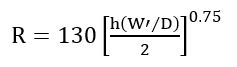
(Equation 7-12)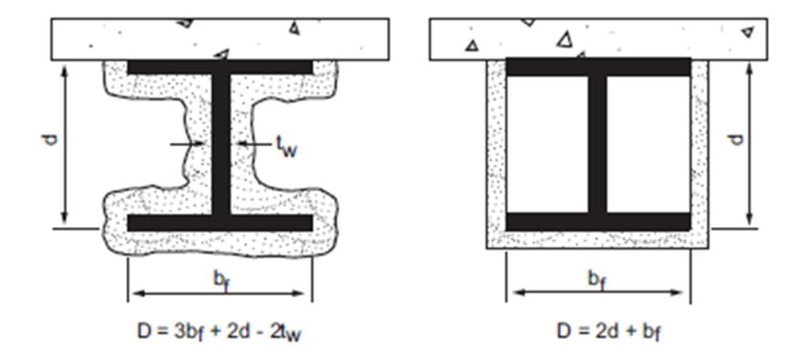
Description of Finish | Time e (minutes) |
Description of Finish | Time e (minutes) |
3/8-inch wood structural panel bonded with exterior glue | 5 |
15/32-inch wood structural panel bonded with exterior glue | 10 |
19/32-inch wood structural panel bonded with exterior glue | 15 |
3/8-inch gypsum wallboard | 10 |
1/2-inch gypsum wallboard | 15 |
5/8-inch gypsum wallboard | 30 |
1/2-inch Type X gypsum wallboard | 25 |
5/8-inch Type X gypsum wallboard | 40 |
Double 3/8-inch gypsum wallboard | 25 |
1/2- + 3/8-inch gypsum wallboard | 35 |
Double 1/2-inch gypsum wallboard | 40 |
Description | Time Assigned to Frame (minutes) |
Wood studs 16 inches o.c. | 20 |
Wood floor and roof joists 16 inches o.c | 10 |
Sheathing | Paper | Exterior Finish |
5/8-inch T & G lumber 5/16-inch exterior glue plywood 1/2-inch gypsum wallboard 5/8-inch gypsum wallboard 1/2-inch fiberboard | Sheathing paper | Lumber siding Wood shingles and shakes 1/4-inch fiber-cement lap, panel or shingle siding 1/4-inch wood structural panels-exterior type 1/4-inch hardboard Metal siding Stucco on metal lath Masonry veneer Vinyl siding |
None | – | 3/8-inch exterior-grade wood structural panels |
Assembly | Structural Members | Subfloor or Roof Deck | Finished Flooring or Roofing |
Floor | Wood | 15/32-inch wood structural panels or 11/16 inch T & G softwood | Hardwood or softwood flooring on building paper resilient flooring, parquet floor felted-synthetic fiber floor coverings, carpeting, or ceramic tile on 1/4-inch-thick fiber-cement underlayment or 3/8-inch-thick panel-type underlay Ceramic tile on 1 1/4-inch mortar bed |
Roof | Wood | 15/32-inch wood structural panels or 11/16 inch T & G softwood | Finished roofing material with or without insulation |
Description of Additional Protection | Fire Resistance (minutes) |
Add to the fire-resistance rating of wood stud walls if the spaces between the studs are completely filled with glass fiber mineral wool batts weighing not less than 2 pounds per cubic foot (0.6 pound per square foot of wall surface) or rockwool or slag material wool batts weighing not less than 3.3 pounds per cubic foot (1 pound per square foot of wall surface), or cellulose insulation having a nominal density not less than 2.6 pounds per cubic foot. | 15 |